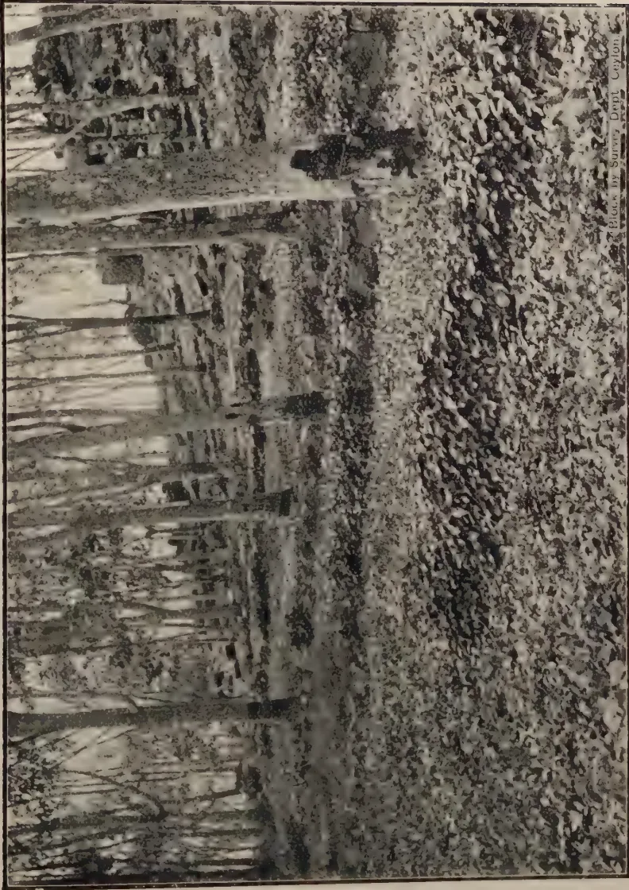
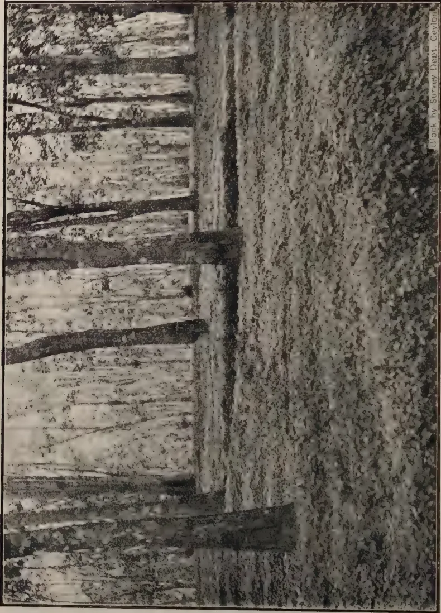
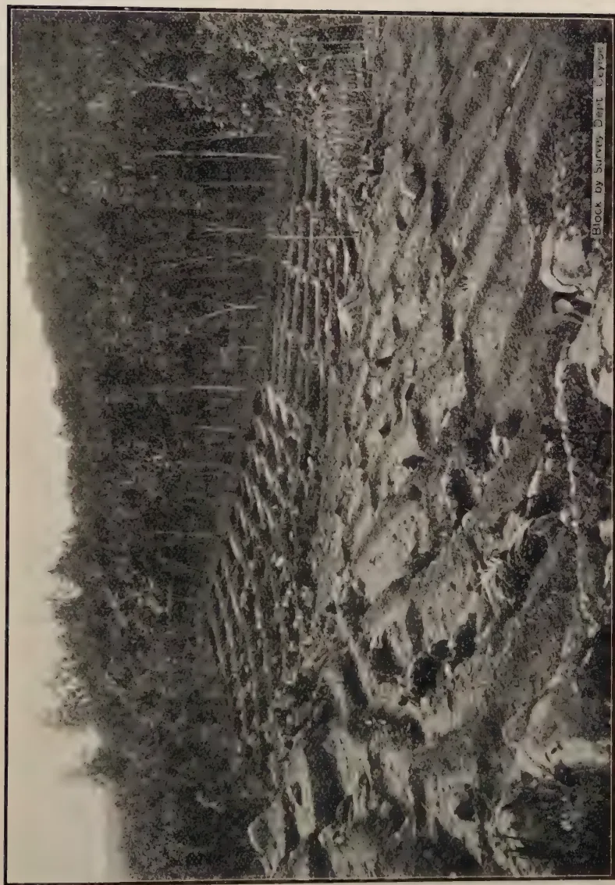
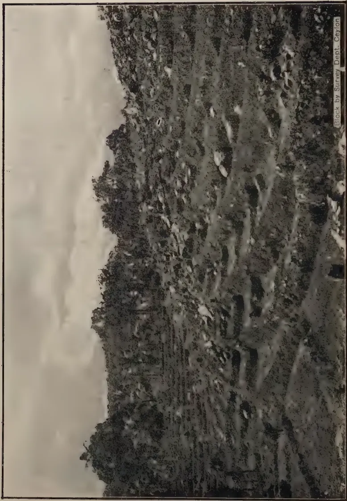
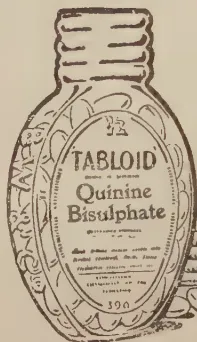

VOL. LXV.
PERADENIYA, OCTOBER, 1925.
No. 4.
The action taken by the Department of Agriculture in bringing prominently before the agriculturists of Ceylon the losses that are being incurred through soil erosion is beginning to result in a number of estates taking energetic steps to check this waste of agricultural wealth.
In our present number are reproduced a number of illustrations showing some of the results which have been obtained with cover crops under rubber and also depict examples of terracing and contour planting. The former illustrations were supplied by Mr. C. E. A. Dias who now has large portions of his estates planted with leguminous cover crops under rubber and the latter were used by Mr. Denham Till of Lowmont Estate during his lecture before the Kalutara Planters' Association.
A brief summary of this lecture is reproduced in this number of the Tropical Agriculturist and should be of interest to all those who are contemplating the opening of new hilly land in rubber or other permanent crops. It is illustrative of a method of terracing which was discussed in our number for September, 1923.
Congratulations are due to the Kalutara Planters' Association for having induced one of their members to give them a lecture on important practical work which he had recently carried out, and Mr. Denham Till deserves the thanks of the whole agricultural community for the careful manner in which he prepared this lecture and the diagrams and photographs he used in illustration of it. This example, it is hoped, will lead to other members of Planters' Associations describing some of their experiments or practical investigations.
For too long a period, agriculture has not figured sufficiently in the agenda of Planters' Association Meetings and the change that is now taking place is a most welcome one.
196[OCTOBER, 1925.It gives us great pleasure to feel that a subject associated with soil erosion has been selected for this lecture, for we are firmly convinced that this is the most important question that Ceylon agriculturists have to tackle at the present time. The problem has been recognised, and serious attempts are being made by several estates to meet their particular difficulties.
Mr. Denham Till demonstrated in his lecture that although the expense of Terracing is somewhat heavier in the first year than ordinary clearing and draining, the annual maintenance costs thereafter are reduced. Even if the total cost before the producing stage of the rubber had been greater, the saving of large quantities of valuable top soil would, within the life of the plantation, have justified this additional cost. It has often been urged that one of the reasons why terraced plantations were not laid out in Ceylon was because of the initial cost, but now-a-days the necessity for adequate provision from the beginning of drains, silt-pits, etc., is fully acknowledged, and the cost of opening is recognised as being much more expensive than in the earlier days of planting estate products in the Island. Mr. Till states that terraced plantations cost over the period of 5 years less than clearings planted up in the ordinary way, even though the initial expenditure during the first year amounts to Rs. 50 per acre.
The figures of costs which he has furnished and which have been reproduced in the local Press are worthy of the closest examination. There can be no doubt as to the difference in the agricultural value of the two methods of opening hilly lands, and, seeing that the staple products of the Island are now exceedingly prosperous, increased initial capital expenditure on opening new areas can be justified.
There are areas of new lands which will be planted in tea and in rubber during the next few years, and it is recommended that the systems of terracing and of contour planting should, in the ultimate interests of such new clearings, be given the closest and most careful consideration,
OCTOBER, 1925.]197The following articles on "Formic Acid as a Coagulant for Hevea Latex," taken from different sources, are published as they are of general interest.
The article by O. de Vries, W. Spoon and R. Riebl is a translation (summary) from the Dutch. The Tables to which reference is made in this summary are not reproduced.
Many years ago formic acid was tried as a coagulant for latex and found to work satisfactorily. The amount required was less than the corresponding weight of acetic, calculated on the 100 per cent. basis. The merchants offering formic acid were sanguine that this would be available at a price which would make it more economical to use than acetic. It does not appear, however, that formic acid was ever marketed at a competitive price. It has certainly never been used to a large extent as a coagulant. Subsequently the war intervened and nothing further was heard of the matter. More recently formic acid has been offered again as a latex coagulant and tests have been made to compare its coagulative power with that of acetic acid. These tests showed that the increasing efficiency claimed for formic acid could not be altogether substantiated. One firm claimed an efficiency ratio of 2:1 or more, stating that "one pound of 90 per cent. formic acid coagulates as much rubber latex as 2 pounds of the glacial acetic acid used at present." Glacial acetic acid is almost 100 per cent. The formic acid offered was 75 per cent. One part of acid was mixed with 120 parts of water. One gallon of this solution was used for each 20 gallons of standardised latex so that actually one part of formic acid reckoned as 100 per cent. strength was found sufficient for approximately 3,200 parts of latex. This corresponds to one part of glacial acetic acid to 1,200 parts of latex, so that the relative efficiencies are as 2 to 1. Incidentally tests have been made in Ceylon and Mr. O'Brien finds the relative efficiencies to be 4 to 3 which is therefore less favourable than the Pataling figures and still further removed from the efficiency ratio of over 2 to 1 claimed by the formic acid makers.
The samples of smoked sheet rubber coagulated with the proportions of acids given above, that is 1 : 3,200 for the formic acid and 1 : 1,200 for the acetic were mixed with sulphur in the usual 9/1 proportion and vulcanised
198[OCTOBER, 1925.2 hours at 40 lb. with the following results:—
| Acetic acid. | Formic acid. | |
|---|---|---|
| Breaking load—grms. per sq. mm | ... 1,630 | 1,600 |
| Final length—per cent. | ... 983 | 985 |
| Elongation at a load of 130 kilos. per sq. cm. | 815 | 825 |
These results show that the formic acid coagulated rubber vulcanises slightly more slowly than the acetic acid coagulated rubber, but in other respects no appreciable difference is revealed. These samples were open-steam cured. A preliminary test with mould-cured specimens gave similar results: these specimens were not fully cured:—
| Acetic acid. | Formic acid | |
|---|---|---|
| Breaking load—grms. per sq. m.m. | ... 1,370 | 1,320 |
| Final length | ... 984 | 990 |
| Elongation at a load of 130 kilos. per sq. cm. | 840 | 865 |
The figures indicate the same small difference in rate of cure as found with the steam-cured specimens above and it was not thought necessary to make repeat vulcanisation tests.
It would seem, therefore, that apart from a slight retardation in rate of cure, there is no marked difference in the vulcanising properties of rubber coagulated with formic acid in the above proportions in the place of acetic acid. On the other hand there appears to be a slight disadvantage, namely, retardation in rate of cure which would no doubt be more pronounced if by any chance an excess of the acid were employed. A bulk test should be made on an estate to see whether the proportion of formic acid used in the preparation of the sample tested is sufficient for ordinary factory working. It will then be possible to ascertain with certainty whether the retardation in rate of cure resulting from use of formic acid as a coagulant is of practical importance—Bulletin of the Rubber Growers' Association, November, 1924.
BY HENRY P. STEVENS.
It is curious to note that recent tests on the coagulating efficiency of formic acid in comparison with acetic acid have given different figures to those obtained in earlier tests. The recent tests show that formic acid is more efficient than previously supposed. Thus, de Vries (Estate Rubber, page 179) gives the relative efficiency ratio as 3:4. Morgan in tests made some years ago found the ratio to be approximately 4:5 whereas our scientific staff now find a ratio of at least 2:1 and de Vries, I understand, now find the ratio to be about the same figure. Recent reports from Ceylon show that the amount of formic acid required was in one case 60% of the amount of acetic acid and in another case 66% to 75%, that is to say, ratios of 5:3, 4:3 and 3:2.
Formic acid 90% is now quoted £48 3s. per ton. Taking acetic acid 90% at £56 to £57 per ton and an effective coagulation ratio of 2:1 the cost of coagulating latex on this basis is therefore reduced approximately to
OCTOBER, 1925.]199one-half by substituting formic acid for acetic acid. Estates wishing to experiment with formic acid can do so with, as far as can be seen, no risk of spoiling their rubber and it will be interesting to learn whether coagulation in bulk can be effected with formic acid in the proportion indicated by more recent experiments.
BY O. DE VRIES, W. SPOON AND R. RIEBL.
Formic acid has been tried as a coagulant already years ago. A summary of earlier results may be found in Sidney Morgan's book*; formic acid was then not cheaper than acetic acid and presented no advantages which made it preferable.
The vulcanising properties of the rubber were in some cases the same as in acetic acid rubber, but in other experiments the formic acid gave a more slowly vulcanising rubber, while large doses of formic acid retarded vulcanisation more than large doses of acetic.† Analyses of the commercial formic acid of 5 to 10 years ago have not been published; whether a content of formaldehyde influenced its properties, as was sometimes supposed, has not been ascertained.
Some samples of formic acid rubber had, after two years' keeping changed in the same way as the acetic acid controls, so that formic acid did not appear to have an unfavourable influence on the keeping properties.‡
After these latter experiments, taken in 1917, no further investigations were made until after the war the question whether formic acid could be used as a coagulant was again put forward from several sides. Two Dutch firms and one American Company asked for information on this point in the end of 1922 and in 1923; a first experimental lot of formic acid was received in October 1923 from a Dutch manufacturer (C.R.S. sample No. 4,680 A), followed in December 1923 by a consignment from another Dutch firm (C.R.S. No. 4,863) and in February, 1924 by some flasks from an American manufacturer (C.R.S. No. 5,039). We made extensive investigations on the coagulating power of formic acid in actual practice and on its influence on the inner properties of the rubber (vulcanising properties in the ordinary rubber sulphur mixture, the lead oxide mixture and the hexa mixture, plasticity, viscosity, chemical composition) and its keeping properties both in the crude and the vulcanised state, and found that formic acid, on the average increases the time of cure in the rubber sulphur mixture by a few minutes—remaining well within the limits of the ordinary variation in plantation rubber—and gives a slightly more plastic rubber with a somewhat lower
* Preparation of Plantation Rubber (1913), page 218-223; for further literature see "Estate Rubber, its Preparation, Properties and Testing" page 180.
† O. De Vries, Archief IV (1920), 218 and 206.
‡ O. De Vries, Archief IV (1920), 218 and 207 table XLIV.
200[OCTOBER, 1925.viscosity. In the hexa mixture the formic acid rubber vulcanised somewhat more slowly, in the lead oxide mixture the difference was negligible.
The keeping properties both of the crude rubber and of vulcanised samples were exactly the same for formic acid as for acetic acid rubber. From a practical standpoint the difference in properties between formic acid rubber and acetic acid rubber is negligible, and formic acid, if it is cheaper, forms a suitable substitute for acetic acid as a coagulant.
1. First experiment in December 1923 with sample No. 4680 A, which contained 88% formic acid and had a dry rest of 0.025%. Crepes prepared in the Central Rubber Station; latex diluted to 20% rubber content and coagulated with the amounts of acid (calculated on dry rubber) mentioned in table I. No differences in time of drying could be noted. Repeat tests after 10 months and 1 year's keeping of the crude rubber. The principal figures, for the samples with the ordinary (small) amount of acid, were :
| Description | Tensile strength | Time of cure | Slope | Viscosity | Plasticity | ||
|---|---|---|---|---|---|---|---|
| Ordinary | Acidified | D30 | Slope | ||||
| Acetic acid, direct - | 1.41 | 100 | 34 | 32 | 17 | 1.52 | 0.065 |
| Formic acid " - | 1.34 | ∧ 120 | 35 | 31 | 16½ | 1.41 | 0.07 |
| Acetic acid, after one year - | 1.41 | 120 | 35 | 27 | 16½ | 1.58 | 0.07 |
| Formic " " " - | 1.45 | ∨ 120 | 35 | 26 | 16½ | 1.55 | 0.06 |
The figures after one year's keeping—about the time the rubber is used in manufacture—are perhaps the most important; the difference between both acids is very small.
The figures in table I for larger amounts of acid are added to show the influence of using too much acid, although this nowadays practically never occurs in actual estate practice.
The keeping properties of the vulcanised rubber were investigated in this way that slabs were cured to give the "correct cure" () and for about 60% of this time of cure. Table III contains the results of the first tests and of the repeat tests after one year's keeping. The changes especially the increase in tensile strength and the decrease in extensibility (decrease in ) are very nearly the same for the shorter cured samples, while the samples cured to our standard state of cure are overcured (brittle) after a year and all show about the same decrease in tensile strength.
2. A second experiment was taken in January 1924 with the second consignment of formic acid (No. 4683), which contained 84% acid and 0.03% dry rest. Results see table IV; the principal figures for the samples
OCTOBER, 1925.]201with the ordinary amount of acid were :
| Sample | Preparation | Tensile strength | Time of cure | Slope | Viscosity | Plasticity | ||
|---|---|---|---|---|---|---|---|---|
| Ordinary | Acidified | D30 | Slope | |||||
| 4967 A | Acetic acid, direct - | 1.43 | 110 | 36 | 32 | — | — | — |
| „ C | Formic „ „ - | 1.44 | 120 | 37 | 30 | — | — | — |
| 4967 A | Acetic acid, after 11 months - | 1.44 | 120 | 35 | 30 | 16½ | 1.44 | 0.07 |
| „ C | Formic acid, after 11 months - | 1.44 | 125 | 35 | 27 | 16 | 1.41 | 0.07 |
Figures for vulcanised slabs, cured for 75 and 120 minutes respectively, may be found in table VI.
3. After the receipt of the third lot of formic acid (No. 5039, from America) that contained 85% acid with a dry rest of 0.05%, another series of large samples was prepared with all three samples of formic acid. As the amount of acid used in experiment 1 and 2 was rather large for rubber rolled on the next day, we added in this experiment samples with small amounts of acid. Results see table VII; the figures for the normal amount of acid were :
| Preparation | Tested | Tensile strength | Time of cure | Slope | Viscosity | Plasticity | ||
|---|---|---|---|---|---|---|---|---|
| Ordinary | Acidified | D30 | Slope | |||||
| Acetic acid, 1:160 - | direct | 1.29 | 115 | 37 | 33 | — | — | — |
| Formic acid, 1:320, No. 4680 - | „ | 1.43 | ∇ 110 | 37 | 34 | — | — | — |
| same, No. 4863 - | „ | 1.38 | 115 | 37 | 33 | — | — | — |
| same, No. 5039 - | „ | 1.40 | 115 | 37 | 32 | — | — | — |
| Acetic acid, 1:160 - | after 1 year | 1.44 | ∇ 110 | 37 | 29 | 16 | 1.48 | .06 |
| Formic acid, 1:320, No. 4680 - | „ | 1.46 | ∇ 110 | 36 | 30 | 17 | 1.51 | 0.065 |
| same No. 4863 - | „ | 1.50 | 110 | 36 | 29 | 17 | 1.51 | 0.06 |
| same No. 5039 - | „ | 1.47 | 115 | 36 | 28 | 16.5 | 1.50 | 0.06 |
The differences are small and practically nihil.
The keeping properties of the crude rubber, found by repeat tests after keeping year (viscosity) and 1 year (vulcanising properties, viscosity and plasticity) are given in table VII; table X contains the results of repeat tests in slabs cured for 70 and 110 minutes of which two rings were tested when fresh, two rings after keeping the vulcanisate for one year, while two further rings are kept for a repeat test after 2 years. The difference in keeping properties, as in former experiments, is negligible.
4. On an estate (W 168, that was the first to use formic acid on a large scale, a series of samples was prepared under our supervision in March, 1924. Latex diluted to 20%; acid added in 1% solution, using formic acid No. 5039. The samples were prepared as smoked sheet in the same way as the ordinary output of the estate. Results see table XI, in which the repeat tests in the crude rubber after year and 1 year are also added.
202[OCTOBER, 1925]The principal figures were :
| Per Liter 20% latex | Tested | Tensile strength | Time of cure | Slope | Viscosity | Plasticity | ||
|---|---|---|---|---|---|---|---|---|
| Ordinary | Acidified | D30 | Slope | |||||
| 1.75 gr. acetic acid - | direct | 1.42 | 85 | 37 | 25 | — | — | — |
| 1 gr. formic acid - | direct | 1.46 | 80 | 37 | 23 | — | — | — |
| 1.75 gr. acetic acid - | 1 year | 1.42 | 90 | 37 | 33 | 16 | 1.74 | 0.08 |
| 1 gr. formic acid - | 1 year | 1.45 | 90 | 37 | 26 | 15 | 1.51 | 0.07 |
5. Large samples of smoked sheet were prepared on an estate (W9) in September, 1924, under our supervision, using per coagulating pan 4 Liter of latex and 1½ Liter water, and coagulating with 320 cc 2% acetic resp. 160 cc 2% formic acid No. 5039. The Netherl. Ind. Association for the Rubber Trade reported that "the market value of the two samples, according to exterior appearance, was absolutely the same." Part of the sample was sent to an American manufacturer for testing; part was tested and retested in the Central Rubber Station, with the results mentioned in table XII, showing the ordinary small differences in time of cure and plasticity.
The chemical composition of these samples is given in Table XIII.
6. In a similar way large samples of thin pale crepe were prepared on estate G 13 in September, 1924. Figures see table XIV, chemical composition see table XV. The market value of the two samples was judged by the Batavia experts and found to be the same.
7. The samples described under 5 and 6 were also tested in the hexa and lead mixture.* Table XVI contains the results in the hexa mixture. With the smoked sheet the acetic acid sample reaches the lowest position of the stress strain curve in 50 minutes, the formic acid sample in 60 minutes, so that the latter cures somewhat more slowly; the pale crepe show no difference in rate of cure. The tensile strength in all cases is high for the undercured samples, lower when regression has set in.
The lead mixture gave the figures mentioned in table XVII. Cures from 30 to 120 minutes are all on the regression part of the curve; the difference in L/100 for the same time of cure between the acetic and the formic acid samples is in the average +9 units or about 5 minutes in time of cure with the smoked sheet, so that in this case the formic acid samples cure slightly more quickly. The difference for the pale crepe is negligible.
8. We received a large number of formic acid samples from estates, most of them with acetic acid controls. The controls, however, were mostly not prepared from the same bulked of latex, and often on other days than the formic acid samples, so that the figures for each set are not strictly comparable. The figures in table XVIII, both for the fresh samples and for the repeat tests after 6, 10 or 12 months, are all normal and within the ordinary limits for plantation rubber, so that the use of formic acid under the conditions of actual estate practice does not lead to undesirable deviations.
* Compare this Archief VIII (1924), 721 and IX (1925) 399 400.
OCTOBER, 1925.]203The average figures for vulcanising properties, etc. of the comparable sets are :
| Number of Series | Description | Tensile strength | Time of cure | Slope | Viscosity |
|---|---|---|---|---|---|
| 11 | Smoked sheet, acetic acid | 1'43 | 105 | 36'7 | 31 |
| " " formic acid | 1'415 | 109 | 36'7 | 35'5 | |
| 11 | Pale crepe, acetic acid | 1'435 | 110 | 35'6 | 33 |
| " " formic acid | 1'43 | 113 | 35'5 | 33 |
Plasticity was determined only in a small number of cases ; results see table XX, showing only a very small difference. In one series (No. 5714) the vulcanisation test was repeated after one year ; results see table XXI, the difference is negligible. Viscosity tests were repeated in many samples after or 1 year ; table XXII shows that the differences are small and for formic acid about the same as for acetic.
In eight series of smoked sheets the liability to mouldiness was determined ; in seven cases it was the same, in one case the acetic acid sample was slightly more liable to mouldiness. The exterior appearance of samples from one set was in all cases practically the same and no deviation due to the use of formic acid could be detected.—Archief Voor De Rubbercultuur, September, 1925.
T. E. H. O'BRIEN, B.Sc.,
Chemist, Rubber Research Scheme, Ceylon.
In the early days of the Plantation Industry, formic acid, in common with most well known acids, was tested as a coagulant for rubber. It was found to be a satisfactory coagulant, having a stronger coagulating power than acetic acid. It could not however compete in price with acetic acid, and was never used to any great extent.
Interest in the subject has recently revived owing to the fact that supplies of formic acid have now become available at a price which would make it a cheaper coagulant than acetic acid.
The manufacturers of formic acid claim that 1 part of formic acid coagulates twice as much rubber as 1 part of acetic acid. The most recent quotation for formic acid (90%) delivered Colombo is £48. 18. 0 per ton, compared with £58 for acetic acid, thus showing an apparent saving of more than 50% on present coagulating charges.
It should be pointed out, however, that as far as can be ascertained, the tests mentioned by the makers refer to a comparison of equal Volumes of acid, while the price is for equal Weighls. The weight of 1 gallon of formic acid is 12 lb., whilst 1 gallon of acetic acid weighs only 10.5 lb. It will therefore be seen that if a comparison is made on the same basis on which the acid is sold the relative amounts of acetic and formic acid would
204[OCTOBER, 1925.be not 100: 50, but 100: 57. Confusion between volume and weight probably accounts for the different figures given for the efficiency of formic acid.
Samples of formic acid were received by the Research Scheme from two different sources, one being American and the other Dutch. Formic acid is made in different grades ranging in strength from 80 to 90%. The samples supplied were respectively 85% and 90%, these figures being confirmed by analysis. The acetic acid with which they were compared was of the usual strength, i.e., 98—99%.
As a result of a number of tests carried out both in the laboratories and in factories in the Kalutara district, at dilutions suitable for manufacture of both sheet and crepe, and on estates tapping on 2-day and 3-day systems, it was established that 1 part by Volume of 90% formic acid coagulates approximately as much rubber as 2 parts of acetic acid, thus substantiating the claim of the manufacturers. 85% acid, as would be expected, was found to be approximately 5% less efficient.
A comparison can now be made of the relative cost of coagulation with formic acid and acetic acid. On a Weight basis, 57 parts of 90% formic acid are equal in coagulating power to 100 parts of acetic acid. The prices being as mentioned above, the saving on coagulation costs would amount to just 51.5%.
So much for cost, but this is not the only factor of importance in the choice of a coagulant. It is essential that the appearance and vulcanising properties of the rubber should be satisfactory.
As regards the first point it can be said that rubber coagulated with formic acid is at least equal in appearance to rubber coagulated with acetic acid. Owing to the fact that formic acid has slight antiseptic and "reducing" properties it will probably be found that the amount of bisulphite used in crepe manufacture can be slightly reduced. It can also be surmised that there will be slightly less tendency to "bubbles" in sheet.
The Rubber Research Scheme has not carried out vulcanisation tests on rubber coagulated with formic acid, but results of tests from other sources are available. The Consulting Chemist to the Rubber Growers' Association reports, as a result of preliminary tests (R. G. A. Bulletin, Vol. VI. p. 697), that formic acid coagulated rubber is equal in strength to acetic acid coagulated rubber, but vulcanises slightly more slowly. Similar results have been obtained in tests carried out by the Experimental Stations in Java, and the Government Research Institute in Holland, it also being stated by the latter that the difference in rate of vulcanisation disappears in presence of "accelerators."
The Rubber Growers' Association has now arranged for large scale samples of formic acid rubber to be tested by manufacturers, and in the meantime Estates wishing to experiment with formic acid can do so without risk of spoiling their rubber.
It is considered by the Research Scheme that formic acid could now profitably be adopted as a coagulant, and estates might obtain supplies of the acid and make experiments with it.
In testing the acid it should be remembered that 1 part of 90% acid has approximately the same coagulating power as 2 parts of acetic acid,
OCTOBER, 1925.]205with the 85% acid a slightly larger quantity will be required. It will be found most convenient to use the same amount of liquid for coagulating as previously, i.e., if the present factory formula consists of 8 oz. of acetic acid in 7 pints of water per Shanghai jar than 4 oz. of formic acid should be used in the same quantity of water.
If strong formic acid comes in contact with the skin it causes blisters unless immediately washed off, so it must be handled with the degree of care that is usual with acetic acid.
No definite figure can be given for the weight of dry rubber which should be obtained for a given quantity of acid, as this will vary on different estates and also depends on the dilution of the latex. On estates in the Kalutara district it was found that 1 pound of acetic acid coagulated approximately 200 lb. of rubber at 2 lb. per gallon dilution, and 170—180 lb. at lb. per gallon (for rolling the following morning).—Second Quarterly Circular for 1925 of the Rubber Research Scheme, Ceylon.
B. J. EATON, O.B.E., F.I.C., F.C.S.,
Agricultural Chemist, Dept. of Agriculture, S.S. & F.M.S.
Owing to recent interest in and enquiries received concerning the use of formic acid in place of acetic acid as a coagulant for Hevea latex, in the preparation of rubber, the following results and observations on experiments carried out by the writer about ten years ago and published in Bulletin No. 27 "The Preparation and Vulcanisation of Plantation Rubber" (pages 232-233) may be of value.
The table below, abstracted from the above publication, gives the rate of vulcanisation and tensile figures for samples of fast curing rubber (Slab) coagulated by means of the minimum amount of formic acid (1.5 oz. of a 5 per cent. solution of formic acid per gallon of standard latex) and also with an excess of the acid equivalent to 33 per cent. above the minimum. For comparison, the figures for a sample coagulated with the minimum amount of acetic acid (approx. 3 oz. of a 5 per cent. solution per gallon of standard latex) are included.
| Reference No. | Optimum time of cure. | Breaking Load (Kilos sq. m.m.) | Elongation at break (Original length=100) | Tensile Product. |
|---|---|---|---|---|
| Hours | (a) | (b) | (a & b) | |
| 163. S 1A | 1'50 | 991 | 1486 | |
| 163. S. 3 B. I to S. 12. B. I | 1— | 1'38—1'55 | 932—1,003 | 1,368—1,508 |
| 163. S. I. B.—S. 3. B. | 1'43—1'46 | 957—986 | 1,396—1,409 |
Sample A is the control sample coagulated with acetic acid; samples BI (ten samples) are those coagulated with the minimum amount of formic acid; samples B (three samples) are those coagulated with 33 per cent. excess of formic acid.
206[OCTOBER, 1925.The figures show that the rate of vulcanisation of the samples coagulated with formic acid compared with that of the acetic acid coagulated sample (Note.—Many other acetic acid coagulated samples give similar figures) are similar, while the figures for tensile strength are also equivalent.
Formic acid, which is a "weak" organic acid, is not likely to affect adversely the keeping qualities of the rubber or to have any other deleterious effect on the rubber.
It will also be seen that only about half the quantity of formic acid, compared with acetic acid, is necessary.
Results have been published by other investigators which show different proportions of formic acid compared with acetic acid, but these differences are probably due to the strength of the original formic acid employed. The strength of the formic acid used in the above experiments was determined by titration.
The "technical" or commercial formic acid on the market is frequently below 100 per cent. strength—a well known commercial acid sold being of 85 per cent. strength, whereas commercial glacial acetic acid is essentially of 100 per cent. strength.
The results show that, if formic acid of 100 per cent. strength can be purchased locally at less than twice the cost of acetic acid, it is more economical than acetic acid as a coagulant. An acid of 80 per cent. strength would have to be less than 1.6 times as expensive as acetic acid to render its use economical.
In purchasing formic acid, buyers should first obtain a guarantee of its strength from the sellers. In the case of glacial acetic acid, the term "glacial" is a technical or trade name which indicates that the acid is essentially 100 per cent. No similar term is used, in the case of formic acid, to indicate its strength.
Recent comparative prices quoted for glacial acetic acid, acetic acid (80 per cent.) and formic acid (85 per cent.) in England are £67, £41 and £48 per ton respectively.
At these prices the formic acid is much more economical than acetic acid.
An interesting point in connection with the above market prices is that glacial acetic acid is more than 50 per cent. higher in cost than 80 per cent. acetic acid. Even with the extra freight on 20 per cent. of water, it would probably be more economical to import 80 per cent. acetic acid (pure) into Malaya for estate use, than to continue the importation of the pure glacial acetic acid.
Buyers should however obtain a guarantee of the strength of the acid from sellers.—The Malayan Agricultural Journal, Vol. XIII, No. 8.

A black and white photograph of a rubber plantation. The foreground is dominated by a dense, textured field of fallen leaves or mulch. In the background, a line of tall, slender rubber trees stands against a lighter sky. The image is oriented horizontally on the page.Block of Surin Dam, Guyana
MILLENEYA ESTATE.
Centrosema under old Rubber covering Contour up Stone-Terraces

Photograph by Survey Dept. Ceylon.
WAWALUGALA ESTATE, HORANA.
Vigna oligosperma under old Rubber
BY F. DENHAM TILL,
Superintendent, Lowmoat Estate, Ceylon.
In these notes, which summarise a lecture delivered before the Kalutara Planters' Association, it is my intention briefly to describe the salient features of clearings for planting rubber in a hillside district of Ceylon, and to recapitulate the general facts about soil erosion which are familiar to us.
The chief cause of soil erosion on hillsides is clean weeding. A few rough figures as given below will be of interest. A foot depth of soil per acre is estimated to be equivalent to 43,500 cubic feet approximately, and a cubic foot weighs about 80 lbs. An acre-foot of soil will therefore be equal to 1,555 tons. I am not exaggerating, I think, when I say that most of this 1 foot of top soil containing the best plant-food is washed away within three years of felling a hillside clearing. These figures are, of course, disputable; as it is difficult to arrive at any accurate loss of the constituents of the eroded soil.
The existing methods of planting waste the top soil almost immediately and seldom allow the subsoil a chance of becoming a useful factor.
An attempt is usually made to replace this loss by putting in a quarter ton of manure per acre once in 2 or 3 years at a cost of not less than Rs. 100—150 per ton, and it must strike anybody that a quarter ton manure is a poor compensation for 1,200 tons or more of top soil lost by erosion.
It will be interesting to note that summits of uncleared hills are crowned with a luxuriant growth of healthy trees, but rubber which is a forest tree, on a cleared hill is often of a stunted and wretched growth.
Proof of soil loss is further evinced by the paddy-field silt claim during the first year of opening, and the large quantity of silt deposits at the mouths of Ceylon's rivers.
It appears that the limit of maximum productivity has been reached in many rubber estates and passed on many tea estates. Evidence of this is found in the perpetual manuring which is required to keep up yields. The larger the tree the more plant-food it requires. At present, in Ceylon, the opposite is taking place owing to fine top soil being washed away.
Level trenches and silt-pits without drains are of course excellent methods of arresting wash, but they result in the soil being taken off the top of a hill, and after some years gravitating to the bottom. Either one has repeatedly to throw out the soil from level trenches resulting in the
208[OCTOBER, 1925.downward trend of the soil, or fresh trenches have to be re-cut with consequent damage to root systems. Level trenches with graded drains are wasteful of plant-food.
Roots always try to feed on silt at the bottom of the drain and to push into terraces, proving that in these places, and in the overlay of fallen leaf, which is periodically washed away, lies the only available plant-food. After fallen leaf has washed off, feeding roots are exposed to sun and wind and die off. Repeated re-cutting of drains cuts off the roots feeding therein, with a consequent set-back and starvation of the tree. Drains are usually re-cut at the worst possible time, just after the wintering of the rubber. Up-keep of terracing is fairly expensive, and pressure from the roots and from water on the base of the terrace tend to produce its collapse. There is no insurance against this collapsing, and when it does occur the result of years of trouble trying to save the soil from erosion is gone in a few minutes. The root systems are left exposed. In Ceylon large quantities of sub-soil have been eroded as well as the top soil, and much land has assumed a dangerously steep angle.
There is an alternative system on which I am now experimenting, which will prevent soil erosion, with a more even labour distribution, and which can be financed over a period of years instead of all at the beginning. I wish however to satisfy myself on one or two minor points before giving any account of it, and will confine my remarks to what may be termed the Full Terraced Contour System.
Before any earth shifting is commenced, careful judgment must be exercised to determine the best width for the terraces, and a gradient graph plotted, so that earth-shifting be as small as possible. Line for holes at the predetermined distances, and then for width and position of terraces. Good supervision is essential. Holes for rubber should be as near the centre of terrace as possible—for tea the position is immaterial. It is vital that all terraces should be sloped backwards into the hillside. The bunds to hold in water should be rammed fairly tight. Instead of stone terracing, draining and silt-pitting, energy has been expended in altering the face of the hill. Where the fall of the contour occurs in the horizontal plane, it is cheaper to make small terraces instead of a single long one right round the hill face. Bunds, however, must be left in with every change of level, otherwise erosion will take place. It is sometimes necessary to alter level every 10 feet.
The terrace is sloped backwards and all humus, leaf mould, weed growth, green manure, prunings, etc. are washed backwards and make a heavy deposit of plant-food there and tend to equalise the top soil which was originally thrown out. Rain-water has not followed a course towards the edge of the terrace so that the maximum water-pressure has been exercised against the hillside. The action of this has been to aerate the original sub-soil strata on this side, rendering it capable of nourishing the tree. The only plant-food actually moved by water is always being taken backwards into the hillside instead of forward and downwards.

A black and white photograph showing a new clearing terraced for contour planting of rubber. The terraces are visible as horizontal lines across a hillside, with a dense forest in the background. The terraces are constructed from earth and stones, following the natural contours of the land. The forest in the background is dense and appears to be a tropical forest. The overall scene depicts a landscape undergoing significant land management for rubber cultivation.Block by Survey Dept. Leyton
A NEW CLEARING TERRACED FOR CONTOUR PLANTING OF RUBBER.

A black and white photograph showing a terraced contour system of clearing on a hillside. The terraces are visible as horizontal lines across the slope, with cleared areas and remaining vegetation. The sky is cloudy.Block by Survey Dept. Ceylon
THE TERRACED CONTOUR SYSTEM OF CLEARING—LOWMONT ESTATE.
OCTOBER, 1925.]209I have these in detail. The Lowmont type clearing costs Rs. 20 approximately less per acre and uses approximately 6 more coolies per acre to bring into bearing. These may be summarised as follows:—
| 1st | year | ... | 366 | coolies | costing | ... | Rs. 295'00 |
| 2nd | " | ... | 10 | " | " | ... | " 10'50 |
| 3rd | " | ... | 23 | " | " | ... | " 16'60 |
| 4th | " | ... | 27 | " | " | ... | " 18'20 |
| 5th | " | ... | 21 | " | " | ... | " 10'50 |
| Total | ... | 447 | " | " | ... | Rs. 350'80 | |
| 1st | year | ... | 220 | coolies | costing | ... | Rs. 243'00 |
| 2nd | " | ... | 56 | " | " | ... | " 34'00 |
| 3rd | " | ... | 70 | " | " | ... | " 41'00 |
| 4th | " | ... | 52 | " | " | ... | " 32'00 |
| 5th | " | ... | 43 | " | " | ... | " 22'80 |
| Total | ... | 441 | " | " | ... | Rs. 372'80 | |
These costs should hold good for land with a slope up to 45 degrees, after that the additional cost should work out approximately 20 per cent. extra for 60 degrees, 40 per cent. extra for 70 degrees.
The one drawback to this type of clearing is of course the large labour force required during the first year—and the resultant difficulty in opening a large acreage at once.
The alternative scheme I mentioned is designed to do away with this difficulty and allow of a large area being opened with an average labour force. I am not in a position to give details of this system at the present time.
Nevertheless, I would personally rather have one good acre than three bad ones, and working to this policy the above single disadvantage ought not to count too much against this form of opening.
I must leave you to form your own opinion as to which type of clearing you would rather have your own money in, as this is the best test of their comparative merits.
Remember that the capital value of the one is increasing all the time through the medium of nature's aids, that of the other is decreasing at a rate which I fear we shall be in a position to correctly estimate in a very few years.
210[OCTOBER, 1925.F. A. STOCKDALE, C.B.E., M.A., F.L.S.,
Director of Agriculture.
Bulletin No. 62 of this Department summarized the position in regard to the cultivation of oil palms. It was there stated that the oil palm thrives best in localities and soils which are suitable for rubber or coconuts. Sumatra experience indicates that it yields best where the rainfall is considerable, but will give fair crops when the rainfall exceeds 40 inches per annum provided that this rainfall is evenly distributed.
Towards the end of November, 1915, an area of acres of oil palms was planted out at the Anuradhapura Experiment Station from seed specially obtained through the Department of Agriculture of the Gold Coast. Further palms were planted along the edge of the irrigation channel in 1916. The yields of the oil palms at the Anuradhapura Experiment Station have been as follows:—
| 1919 | ... | 186 | pounds of fruits. |
| 1920 | ... | 102 | do |
| 1921 | ... | 542 | do |
| 1922 | ... | 575 | do |
| 1923 | ... | 1,629 | do |
| 1924 | ... | 929 | do |
| 1925 | ... | 622 | pounds of fruits up to August 15. |
These palms are grown without irrigation, but they receive occasional ploughings and harrowings. They are divided into plots for experimental purposes. In certain plots, artificial fertilization is practised, whilst in others natural fertilization of the flowers is allowed to take place. The above yields may, however, be taken as a fair average of what might be expected from palms grown on unirrigable lands in the Dry Zone of the Colony. These yields when reduced to acre yields amount to the following:—
| 1919 | ... | 80 | pounds of dry fruits per acre. |
| 1920 | ... | 36 | do do |
| 1921 | ... | 181 | do do |
| 1922 | ... | 192 | do do |
| 1923 | ... | 543 | do do |
| 1924 | ... | 310 | do do |
| 1925 | ... | 207 | pounds of dry fruits per acre up to August 15. |
These yields are by weights of dry fruits and represent two-thirds of the actual fresh weights. Even then, these yields compare unfavourably with yields which have been reported from Malaya, and clearly indicate that the dry conditions over a long period—such as prevail in the Dry Zone of Ceylon—are not suitable for prolific fruit production in the oil palm.
OCTOBER, 1925.]211A consignment of these fruits was sent to England last year, and was treated in the exhibition plant of the Nigerian Products, Limited. The fruit was reported to be smaller and rounder than Nigerian, the analysis showing 22.25 per cent. of palm oil, and 18.63 per cent. of kernels as compared with 23.71 per cent. of palm oil and 14.78 per cent. of kernels in Nigerian fruit.
During July, trials were made with the preparation of palm oil by the two methods commonly employed in West Africa, and the following report by Mr. H. A. Deutrom, Manager of the Anuradhapura Experiment Station, is of interest:—
"Four bunches of ripe fruit were cut, and the fruits separated from the bunches with the aid of a pruning knife, care being taken to damage the fruit as little as possible. Half the quantity of fruit was put into an earthenware pot, and two gallons of water added just sufficient to cover the fruit, the remainder of the fruit was put into a pot perforated at the bottom and placed above the other pot. The top of the perforated pot was covered with a half-round chatty. The two joints were then made steam-tight with wet mud, and the pots placed on a well-built fire place and allowed to boil from 8 A. M. to 4 P. M. The boiled and steamed fruits when taken out the following morning were found to be quite soft. They were put into a wooden mortar and pounded till the pulp was separated from the nut. Water was then added to the whole mass of pulp and seed and worked by hand till the nuts with a little fibrous matter attached were separated. As a result of this hand working a yellow scum rose to the surface of the water, which was removed and heated for about two hours when a reddish oily substance was found floating. This was skimmed with a small wooden spoon and put into bottles.
"The fruit being small, five bunches of ripe fruit were cut and spread on the loft of the stores. On the 7th day the fruits appeared quite loose and came off readily when shaken out. The fruit was roughly picked over and put into a dummy canoe (hewn out from a log of wood), sloping down at one end and fitted with a hole and plug. Half a gallon of water was poured in, and the whole covered with plantain leaves and weighted down. On examination at the end of 24 hours the pulp was found to be hard. The fruit was turned over and left for a further 24 hours, at the end of which time the fruit which was soft was trodden with the feet by a cooly, and the mass piled at the higher end of the canoe and covered with plantain leaves. The next day a gallon of hot water was poured into the piled mass of fruit and pulp and worked with the hands as before. The mass was again heaped up at the higher end of the canoe and covered with plantain leaves and left for a further 24 hours to undergo the third fermentation. After the completion of the third fermentation, the covering was removed and two gallons of cold water were poured into the mass of fruit and pulp, mashed with hands and feet and separated into nuts and fibrous pulp. A thick scum of oil floated on the surface of the water, which was removed with a spoon and placed in a vessel for further treatment. The nuts and fibre were washed in the same water and put out to dry. The scum, consisting of oil, water, and finely divided pulp, was heated in a chatty until the water boiled, when the oil was skimmed with a spoon and put into bottles.
212[OCTOBER, 1925.OBSERVATIONS.The 'Hard' oil process yielded more than twice as much oil as the 'Soft' oil process. The weight of fruit used in both the methods was the same although the number of fruits was more in the former due to smaller fruit being used. This high yield is, undoubtedly, due—as the writer of the Nigerian Special Bulletin says—to the fact that the time taken and labour expended in the two operations of washing and two of fermentation of the 'Hard' oil process result in better separation of the pulp from the nut, and what is more important, rupture of a greater proportion of oil cells, than occurs in the one stage of depulping or mashing in the 'Soft' oil method."
These oils have been examined by Mr. A. W. R. Joachim, Agricultural Chemist, who reports as follows:—
"I have the honour to forward herewith report of analyses of the two samples of palm oil and of the fibre sent by the Manager, Experiment Station, Anuradhapura.
As will be observed from the analyses the "Hard" oils give higher figures for all the 'values' determined, including specific gravity and melting point. This is due to the greater quantity of free fatty acid present in the 'Hard oil.' The figures for the 'acid value' show that the 'Hard oil' contains about four times as much free fatty acid as the 'Soft oil,' which can be considered very good so far as freedom from acidity is concerned.
When compared with the 'average' values as given by Lewkowitsch, the figures obtained, with the exception of the 'Saponification value' which is slightly lower in the case of the soft oil, are observed to fall within these ranges. The oils analysed are therefore average palm oils so far as their 'constitution' is concerned."
Analyses of Palm Oil| Soft Oil | Hard Oil | Average values (Lewkowitsch). |
|
|---|---|---|---|
| 1. Specific gravity at 25.5°C | .872 .. | .936 .. | .893—.924 |
| 2. Melting points | .. 39°C. .. | .. 41°C .. | 27—42.3°C. |
| 3. Acid value | .. 8.0 .. | .. 34.9 .. | 8—103.7 |
| 4. Saponification value | .. 194.4 .. | .. 196.9 .. | 196.3—205.5 |
| 5. Iodine value | .. 52.96 .. | .. 54.1 .. | 52—56 |
| Determined Percentage |
Barnes (Calculation on dry matter) |
|
|---|---|---|
| Moisture | ... 3.48 ... | — |
| *Ash | ... 8.65 .. | — |
| Fibre | ... 30.96 .. | — |
| †Proteins | ... 13.75 .. | — |
| Ether extract (oil, &c.) | ... 43.16 .. | 42.0 |
| 100.00 |
* Containing nitrogen 2.2 per cent.
† Containing phosphoric acid = .805 per cent. } calculated on ash.
Potash = .722 " }
The results of these experiments indicate that the variety of oil palm is satisfactory, but that yields in the Dry Zone are poor. These palms, however, appear to thrive better at Anuradhapura without irrigation than the coconut, and as palm oil is an article of food which can be of quite good quality, it has to be considered whether further planting of these palms in the villages is not desirable.
There is little prospect before the oil palm as a plantation product in the Dry Zone of Ceylon, if yields larger than those which have been obtained at the Anuradhapura Experiment Station are not obtainable. In view of the forthcoming opening of the Batticaloa-Trincomalee Railway lines, I would, however, suggest that further trials be made at the various stations on these lines. In fact, I would recommend, for the consideration of the members of the Board of Agriculture, the establishment of small experimental plots at every station. These plots would be likely to yield information of value, and information which would be required if the development of the areas through which these railways pass is to be hastened.
The Joint West African Committee of the Liverpool, London and Manchester Chamber of Commerce suggested some time ago that an enquiry should be held to consider the best means of securing improved and increased production of palm oil and kernels in West Africa. A Committee was appointed in September, 1923, and approved by the Duke of Devonshire, then Secretary of State for the Colonies. The results of that Committee's investigations are now published in a clear and detailed pamphlet.
The merchants and those interested in the British West African Colonies who suggested this enquiry, had in their minds the fate of the rubber industry of West Africa. This industry was at one time an important factor in the world rubber trade—now it is, to all intents and purposes, non-existent. With concern they saw the wasteful collection and non-collection of oil palm products; and the laborious native methods of manufacture, with far greater concern they saw the rapid progress of the Sumatra oil palm industry. The future for West Africa seemed black, and the report of the Committee appointed is not reassuring.
Sumatra possesses those advantages which West Africa lacks. The industry is in the hands of an extremely well-organised and equipped association of planters, the Algemeene Vereeniging van Rubber planters ter Oostkust van Sumatra (A. V. R. O. S.). Through this organisation the most up-to-date knowledge and the results of research work are available to the planters. Oil palm plantations in Sumatra date from 1911, when 6,500 acres were under cultivation, since then despite the intervention of the war, during which planting ceased, the area had increased to over
214[OCTOBER, 1925.30,000 acres. The planters estimate that in the next ten years this area will become 100,000 acres, while it is publicly claimed that within fifteen years more palm oil will be exported than West Africa's pre-war record output. No less than sixty-two estates in Java and Sumatra have started oil palm plantations, and it is confidently expected that production will reach a figure of 20,000 tons in 1930. Moreover, this oil can be put on European market at a substantially lower price than West African oil. Trained indentured labour is available for the Sumatra plantations which are run on scientific lines, and the fruit is treated by modern machinery. It will be a hard task for the British Colonies to keep abreast of such progress.
Elsewhere in West Africa steps are being taken to meet the threatened competition from the East. In 1919 the French commissioned a certain Dr. Van Pelt to investigate the means by which products from the French Colonies might compete with palm producers from Sumatra. As a result of his suggestion a substantial advance has been made in research work. In the Belgian Congo opinion is confident that the palm products industry, will be able to meet this competition. The Belgians claim that up to now the palms in their territories have produced an equal quantity and as good quality fruit as the Sumatra trees. Natural facilities, much research work, good organisation and modern machinery and transport, have contributed to the success of the plantations. Special efforts are being made to improve transport communications from the Haut-Congo. As the best oil palm areas are at an average distance of 1,000 to 1,500 kilometres from the sea, Belgian enterprise is not to be despised.
Both the Gold Coast, Nigeria and Sierra Leone possess large natural areas of oil palm forest, which if scientifically worked and developed would be a great source of wealth to native and European. The palm products industry, however, if not on its last legs is sadly in need of a new pair. It suffers from almost every disadvantage
The labour is unsatisfactory and inadequate.
Regular supplies cannot be relied upon, as they depend largely on the whim of the native, who having obtained a good price for one load, rests from his labours till his earnings are spent. Organised plantations are comparatively few, the trees are scattered and uncared for, and much of the fruit is never gathered.
Collection and extraction methods are laborious and wasteful. The oil extracted in most cases is of inferior quality with a high content of free fatty acid, while the amount of oil obtained is from 8-10 per cent. the weight of the fruit—more than half the amount obtainable by machine expression.
Transport facilities are lacking, the fruit being chiefly brought in on the heads of natives.
Briefly the industry has made little progress and unless some means of reviving and developing it are found, it is bound to die out as the competition from Sumatra increases. Some progress has been made in research work through the Agricultural Departments, but it is strongly
OCTOBER, 1925.]215felt that the chemical and botanical aspects of the problem may receive too much attention. Practical steps must be taken and taken quickly.
Intensive propaganda among the natives should be undertaken by all officials to encourage them to preserve and cultivate the palms, and to limit the destruction of the trees for "toddy!"
Modern machinery for the expression of the oil and removal of the kernels must be introduced, unless the industry is to decay. Most important of all, private enterprise in preference to Government enterprise must be attracted, and mills and machinery will follow. What inducements to offer to private enterprise is the question of the moment. Steps have already been taken in the Gold Coast and Sierra Leone in this direction, but they did not lead far enough, and on the whole ended in failure. The problem is intricate, and abounding in difficulties for the Governments endeavouring to promote the industry. The limit of plantain land, the length of leasehold terms, and the various rights of the mill-owner, are extremely hard to decide, and the conditions under which land may be obtained in the three Colonies vary and are not always favourable.
The Committee which has studied this problem closely has made valuable suggestions for surmounting the difficulties and for providing sufficient inducements to the capitalist. In view of the fact, however, that ten years hence the proposed inducements may be too late, they should be considered as the irreducible minimum. To attract enterprise outside the West Africa Trade is essential, and to do this the maximum possible inducements must be offered, and over-restrictive conditions avoided.
As an instance of the success possible in well-organised concessions we give the following example of a European firm on the Gold Coast:—
"Much valuable work in labour-saving methods has been done by a European Company in the Colony. A concession of palm lands was taken up by arrangement with the native owners, and a central power-driven factory was erected with a service of light railways radiating from it in all directions to facilitate transport. The palms within the concession are worked and developed by the Company, and the native owners are encouraged to collect fruit and sell it to the Company—a popular arrangement. The oil produced is of much finer quality than that produced by native methods, and it is only by multiplication of such mills, either through private enterprise or as a co-operative movement among the people themselves, that a revival of the industry can be hoped for."
The following table gives some idea of the position of exports and of palm products in British-West Africa:—
| Gold Coast, | |||||
| 1922. | Oil | ... | 210,364 | galls. | 1912, 1,444,432 |
| 1885, 6,729,000 " | |||||
| Nigeria, | |||||
| 1922. | Oil | ... | 88,000 | tons | 1919. 101,000 tons |
| Kernels | ... | 179,000 | " | 1919. 217,000 " | |
| Sierra Leone, | |||||
| 1923. | Oil | ... | 3,346 | tons | 1992, 2,076 tons |
| Kernels | ... | 59,543 | " | 1922, 49,029 " |
It will be seen that in Nigeria and the Gold Coast the decrease is large, particularly in the latter where the palm is comparatively neglected for cacao cultivation. The only increase is in the exports of kernels from Sierra Leone, where palm products still form the backbone of the export trade.
A promising industry is growing up in the Federated Malay States, but it is as yet in its infancy, and can have no hope of competing with the Sumatra industry. Only about 5,000 acres are under cultivation in comparison with Sumatra's 35,000, and of these 1,000 are in bearing. Planters, however, are benefiting from the experience and example of Sumatra planters, and the industry though young is being run on up-to-date lines. The following table of annual yields obtained in Malaya is of interest :—
| Age of Palm. | Fruits per palm per annum. | Fruits per acre. | Pericarp per acre. | Palm Oil per acre. | Palm Oil Output per acre (85% basis.) | Kernels per acre. |
|---|---|---|---|---|---|---|
| 4th year ... | 45 | 2,475 | 1,436 | 767 | 652 | 173 |
| 5th—7th year ... | 90 | 4,950 | 2,872 | 1,534 | 1,304 | 346 |
| 8th—10th year .. | 100 | 5,500 | 3,190 | 1,705 | 1,449 | 385 |
| 11th—15th year ... | 125 | 6,875 | 3,988 | 2,131 | 1,811 | 481 |
| 16th—30th year ... | 145 | 7,975 | 4,626 | 2,472 | 2,101 | 558 |
This is a conservative estimate.
Malaya is fully awake to the possibilities of obtaining a very small percentage of free fatty acids. Experiments are being conducted with a view to securing not more than 3 per cent. of the acids. Care in picking, storing and extracting the oil from the fruit, helps to render this percentage low. In West Africa the primitive methods of boiling the oil cut with water, makes anything up to 50 per cent. of the acids possible. In Malaya the fruit undergoes a preliminary heating to destroy fermentation; it is pressed in order to obtain as much oil as possible without cracking the nut. The pericarp is removed by a depulper and pressed again, and the residue used as fuel. Centrifugal extraction has been employed by means of which the greater proportion of the oil and moisture is removed, and the separation of the nuts from the fibrous residue facilitated, the last pressing being carried out in the same way as the previous method. Extraction of Kernel Oil is carried on, but the demand in the home-market is for the kernels, so expression is not likely to increase very greatly. The export of kernels is growing, and the industry is becoming well known. Numerous applications for land have been received, and experimental cultivation is carried on at the Government Plantation.—Empire Production and Export, August, 1925.
The following extract is taken from the Annual Report of the Chemical Division of the Department of Agriculture, F.M.S. & S.S. for the year 1924.
At the request of the Honourable the Chief Secretary, experiments were carried out to determine whether more palm oil could be extracted from the residual pericarp after this has been treated by the primitive methods at present in use in Malaya and Sumatra. This residue contains about 25 per cent. of oil and it was found that 5 per cent., based on the weight of the material, could be obtained by boiling the pericarp with water and subsequent pressing in a hand-screw press. Modern machinery for the extraction of the oil with a resulting higher yield of oil, has since been installed.
OCTOBER, 1925.]217W. MOLEGODE,
Agricultural Instructor.
The manuring trials were repeated on the Katugastota fields during 1924-1925 Maha season. The following are the results. It will be observed that the yields are below those obtained the previous year, but it has to be remembered that the Maha of 1923-1924 was an exceptionally good paddy season and all Goda kumburas like the one at Katugastota gave good returns.
Plot A. size approximately 39 acre.
Manured with cwt. Ephos phosphate on 6.10.24
Yield 1924-1925—19 bushels or 54 bushels per acre
„ 1923-1924— 78 „ „ „
Plot B. size approximately 29 acre.
cwt. Ephos phosphate applied on 9.10.24
Yield 1924-1925—16 bushels or 55 bushels per acre
„ 1923-1924 80.4 „ „ „
Plot C. size approximately 31 acre.
cwt. Ephos phosphate applied on 6.10.24
Yield 1924-1925—19 bushels or 59 bushels per acre
„ 1923-1924 67 „ „ „
Plot D. Control. size of plot, 24 acre.
Yield 1924-1925—13 bushels or 56 bushels per acre
„ 1923-1924 72 „ „ „
Plot E. size approximately 38 acre.
Manured with cwt. Bone meal on 7.10.24
Yield 1924-1925—24 bushels or 63 bushels per acre
„ 1923-1924 84 „ „ „
Plot F. size approximately 40 acre.
cwt. of Bone meal applied on 9.10.24
Yield 1924-1925—24 bushels or 60 bushels per acre
„ 1923-1924 65 „ „ „
Plot G. size approximately 24 acre.
cwt. of Bone meal applied on 7.10.24
Yield 1924-1925—17 bushels or 75 bushels per acre
„ 1923-1924 87 „ „ „
Plot H. Control, size approximately 28 acre.
Yield 1924-1925—14 bushels or 52 bushels per acre
„ 1923-1924 77 „ „ „
All these plots were transplanted from 6th to 12th October, 1924, with seedlings of Hathiel, and were harvested from 28th February to 5th March, 1925.
218[OCTOBER, 1925.At the time of flowering there was rain and consequently there was found to be a large percentage of empty grains.
Compared with the season 1923-1924 the growth in 1924-1925 was poorer.
In plots A, B, E, and F, there was better tillering than in the others.
Though there has been a falling off in the yield of paddy as compared with the previous year's crops it will be observed that the yields from the various plots compare favourably with one another clearly indicating that cwt. of manure on acre is much better than cwt. on larger plots.
In the above figures there are sure to be great field errors but the object of the trials was to demonstrate to the villager that manuring is beneficial.
W. MOLEGODE,
Agricultural Instructor.
During the Maha season of 1924-1925 the following, among other trials, were carried out, and the results are now published as they appear to be interesting, in view of the fact that in Ceylon far too much seed is sown on paddy fields.
The trials were carried out in Kondedeniya village, near Katugastota.
An extent of approximately half an acre or a pela in extent, was divided into two plots of equal size.
One plot was transplanted with six weeks old seedlings of selected Hathiel on the 9th of October, planting at the rate of 2 or 3 seedlings 4 to 6 inches apart. Instead of using 5 lahas for raising the necessary seedlings for this extent of field as is the practice among local paddy cultivators only 4 lahas were used thus effecting a reduction of 20% in the seed.
The other plot was sown broadcast with the same type of paddy on 28th August, and the same reduction of seed was made here too.
The broadcasted field was harvested on February 28th, 1925, and the transplanted plot on March 6th. The yield from the transplanted plot was bushels or 49 bushels per acre. The yield from the broadcasted plot was bushels or 38 bushels per acre.
Compared with the yields of adjoining fields of transplanted and broadcasted paddy of the same type these results were in no wise different, thus clearly indicating that the existing seed rate in paddy can be reduced with advantage.
In this locality there are about 300 acres of paddy on which according to the prevailing practice 600 bushels of paddy are sown. If the seed rate can be reduced by 20%—it can be reduced by a much larger margin—a saving of 120 bushels of paddy in a season can be effected. With the gradual introduction of Pure Line paddy and the practice of transplanting becoming more general there are the possibilities of reducing the seed rate by 50% when transplanting is carried out and by 20% to 30% when broadcasting. The paddy cultivator has begun to realise that a saving of seed can be effected and there are in this locality many instances this Maha season where the 20% reduction has taken place.
OCTOBER, 1925.]219E. J. BUTLER,
Director, Imperial Bureau of Mycology, Kew, England.
In its early stages, the study of plant diseases resolved itself into little more than a study of the parasites. Later, the study of the host plant received greater prominence, as the truth that disease is an indication of abnormal or disordered physiology became generally recognised. Still more recently has come the recognition of another truth, namely, that diseases caused by parasites are the manifestations of complex interactions of host and parasite under the influence of the conditions of a varying environment. Such conditions may be designated "environmental factors."
No observant person who watches the incidence of plant diseases can avoid noticing the marked influence of one group of environmental factors, those included in what is rather vaguely termed the weather, on the prevalence of many of these diseases. To give only one instance, the unusual prevalence of the powdery mildews (Erysiphaceæ) noticed in England in certain summers, such as that of 1921, is frequently ascribed to periods of dry, hot weather. At the same time, such a summer as that of 1921 was too dry for potato blight (Phytophthora infestans) to be severe in most parts of England. If these statements are true it is evident not only that disease is influenced by the weather, but also that different diseases are differently influenced by the same kind of weather.
Furthermore, if disease in any one country can vary from year to year under the influence of the annual fluctuations of the weather, we would expect to find that countries possessing different climates, that is different average weather conditions, would show still more marked variations in the prevalence of their plant diseases, owing to the greater amplitude of the variations between different climates than between those of the weather of any single climate.
It might be expected that comparison between the plant diseases of areas with different climates would be difficult because the host plants would not be the same. However true this may be for the wild plants, it is much less true in regard to the major cultivated crops. The latter have been subjected to long periods of artificial selection in such a way as greatly to extend their original range. Wheat and potatoes, for instance, are grown under very considerable differences in climatic conditions. Their parasites, on the other hand, have not been subjected to the same human influence, and they have had to follow the hosts as best they could. In the larger continental areas, such as the United States and India, the wheat, sorghum, maize, and potato areas are much greater than the areas in which certain of their parasites are found.
220[OCTOBER, 1925.Weather and climate depend on the same set of factors—the ordinary meteorological factors of temperature, humidity, light, wind, etc.—and if it is desired to understand the relationship between meteorology and disease, an attempt must be made to evaluate the influence of each of these factors on the interaction between host and parasite. Probably this influence is capable, in most cases, of exact evaluation, but the data are as yet somewhat scanty. Temperature, humidity, and radiation are the chief factors about which data exist, and the following discussion will be confined to them.
The most difficult case is undoubtedly the study of the influence on disease of variations in weather conditions from one year to another within the same area. These variations are of lesser amplitude and duration than those between different climates, and most frequently are not large enough to prevent the disease from appearing but merely influence its amount.
In India rust is present every year in probably every wheat field. Whether an epidemic outbreak occurs or not appears to depend entirely on the weather conditions of the year. These conditions were analysed by Moreland for 13 years in three selected districts in the mid-Gangetic Plain. He concluded that the deciding factor was the humidity of the air in January and February (the crop being sown in October and harvested about April), and that in the districts with the earliest harvest, the earlier part of this period was more important than the later. My own observations are in general agreement with these, except for the rather natural proviso that it is the humidity of the air within the crop that is of consequence. In a field at Pusa sown throughout with the same variety of wheat, rust (Puccinia triticina and P. glumarum) was severe in an area with a dense stand and almost absent towards the borders of the field where the growth was light. In the dense crop the air humidity was nearly 20% higher, four inches above the ground than in the light crop, as tested by an experiment lasting between 7 and 8 hours on a dull day. The temperature was about 3°C. lower in the dense crop. Soil moisture determinations showed that there was much more moisture under the dense crop, especially from the 3rd to the 6th foot, and this was really the cause of the good growth, as soil moisture is the chief limiting factor in wheat growing at Pusa.
Another disease, which at Pusa is depeadent on humidity or rather on the deposition of dew is the die-back of chillies (Capsicum), due to Vermicularia Capsici). This disease appears at the flowering season about the beginning of October and may do very great damage. It ceases abruptly about 4 to 6 weeks later. This is because it is dependent on the heavy dews of this period, accompanied by a moderately high temperature. Artificial inoculations only succeed in almost saturated conditions. Plants growing under shade escape, as the deposit of the dew is slight. Later on, as the temperature falls and dew is less copious, the disease ceases. Observations during six years suggest that the relative air humidity requisite to cause an outbreak of this disease during the flowering period is over 85%. In three of these years, when it was below this figure in the second half of September there was no disease.
Potato blight (Phytophthora infestans) in the Gangetic Plain is influenced by a somewhat more complex group of factors. It is usually absent, and
OCTOBER, 1925.]221only two outbreaks have occurred in the last 25 years. Under certain circumstances a considerable portion of the seed used is brought down from the Himalayas where, at altitudes from about 4,000 to 7,000 ft., blight is endemic. If the Plains temperature is sufficiently high infected seed thus brought down becomes sterilized, as it is well known that Phytophthora infestans is easily killed by heat. In 1912 a large import of diseased seed occurred rather late in the season, which was unusually cool at sowing time (October). In late December there was much fog and cloud with a low temperature, and an epidemic was in progress in January 1913. Attempts to carry the fungus in culture over the following hot weather at Fusa failed and in the fields also there was no disease next year.
In localities where potato blight is endemic the problem is much more difficult and the meteorologic conditions that govern its intensity are by no means fully understood. It is one of the cases in which a good deal is known, thanks to the work of Melhus and others, of the conditions of temperature and humidity that influence the life history of the parasite. The optimum temperature for the germination of the spores is between 10° and 13°C. A frost sufficient to kill potato leaves will also kill the mycelium of the fungus. Its upper temperature limits are below those required to injure the tuber, as it will not survive even 4 hours at 120°F., and cannot long be kept alive in cultures maintained throughout at over 90°F. But its optimum temperature for growth is much higher than the germinative optimum, being about 24°C. Its moisture relations are not so exactly known, but like all its allies it requires a high humidity for successful germination; it cannot stand drying for long, and zoospores are formed as a rule only in drops or films of water. The period of motility of the zoospores is longer at low temperatures; they can swim for 20 hours at 5°C., but only for 1 hour at 20°C. If the meteorological factors that influence the disease acted only by influencing the parasite, we would expect to find outbreaks always occurring when a cool, damp period alternated with a warm period at a time of the year, say July, in England when there is usually some blight in most of the potato fields. The cool period would assist germination and prolong the life of the zoospores, thus aiding dissemination, while the succeeding warm period would stimulate the growth of the fungus in the tissues. If another cool, damp period followed when the new infections were in the sporting stage, we would get the process repeated in an accentuated degree, and several such oscillations would enormously multiply the attack. But it is not easy to find records of such a regular sequence of events, partly because the meteorological data are not sufficiently detailed but perhaps also partly because the influence of the weather factors on the potato plant itself have not been studied. It is known, however, that in at least certain areas in the United States an unusually cool summer is necessary for severe attacks. It is also almost confined to the north-east, being seldom found below 40° of N. latitude. In Europe it is prevalent north of 50°N. In all cases it is worst where the humidity is high. In localities like the Channel Islands and the west of Ireland the humidity conditions are usually suitable, and temperature is likely to be the controlling factor in most years.
222[OCTOBER, 1925.Many other diseases caused by Oomycetes appear to be influenced by rather similar conditions, as most of the Pernosporaceae have similar temperature relations. In order to demonstrate the liberation of zoospores in the Phycomycetes it has been the custom in Pusa to use chilled water during the warmer parts of the year. The downy mildew of the grape, caused by Plasmopara viticola, appears to be an exception, as most observers consider that it is worst in relatively high temperatures.
It would appear that black rot of the grape vine, caused by Gaillardia Bidwellii, is a similar case. It is stated that severe infection only occurs when there is a cold snap with rain, followed by a warmer period. Though the temperature relations of the fungus have not been worked out, so far as I know, this is very suggestive of their being similar to those just mentioned.
Another group of diseases that appears to be closely influenced by weather conditions is the powdery mildews (Erysiphaceae). It has already been mentioned that they are sometimes said to be worse in England in dry years. I have noticed the same thing in India with regard to the pea mildew, Erysiphe Polygoni. More exact observations are rare. Losch examined the prevalence of apple mildew in an orchard situated on the slope of a ravine in Wurtemberg. The slope faced S. E. The upper part was severely attacked but, as one descended, the mildew decreased until at the bottom it was insignificant. The rays of the sun struck full on the upper slope. They reached lower down later in the day and, at the bottom, shade remained all the forenoon. The upper part was very hot and dry, the bottom cool and moist. No evidence was obtained as to whether the host or the parasite was most influenced, nor whether different varieties of apple would be equally affected.
Oak mildew behaves in the same manner. It has been noted to be more severe in the upper levels of sloping woods, and also in exposed localities. Neger has found that it produces its conidia much more vigorously on shoots exposed to the light than on those in the shade. Exposure and sunny weather favour the disease, but the relative importance of the factors of drought and radiation have not been fully estimated.
In Italy it has been noticed that either a drying out of the soil or a sudden rise in temperature makes wheat susceptible to Erysiphe graminis. Rivera believes that this is due to a lessening of turgescence and is therefore a reaction of the host plant and not of the parasite. He says it is particularly marked in rich soils where the plants have a relatively restricted root development and would naturally suffer from shortage of water or excessive transpiration. A hot sun and dry conditions are inimical to certain species of Oidium and epidemics are only likely to occur when there is a rapid alternation of moisture and dryness.
In India, tobacco mildew (Erysiphe Cichoracearum) is practically confined to shaded plants and the cereal mildew is also worse under shade. Most experimenters with cereal cultures kept indoors, must have noticed the greater prevalence of mildew under such conditions than in the open. More diffuse light and the absence of air currents appear to be the causes, and exposure to light and air the remedy. The same has been noticed in
OCTOBER, 1925.]223regard to the vine Oidium, and those on strawberry and cucumber. These apparent discrepancies might disappear on more exact knowledge of the actions of the different factors. The latter have not been studied in detail as regards their effect on the host-parasite complex, but they appear to be sufficiently marked to permit of exact evaluation. It seems likely that their action on the host is of greater importance than on the parasite, contrary to what appears to be the case with the downy mildews.
All these are cases of parasites, primarily of the aerial parts of the plants. If we turn to those of the roots we find rather more exact knowledge. The problem is perhaps easier, as the environment is relatively more stable.
The earliest, and still one of the most complete, studies of the influence of temperature on a soil-dwelling parasite was made by Balls in Egypt, in 1905-6, on the sore-shin disease (Rhizoctonia Solani) of cotton. The damage done by this disease is usually restricted to the first stages of development of the seedling. Once cork-formation begins damage ceases. Cotton is sown in Egypt at different times between the end of February and May. The earlier sowings may take about 12 days to appear above ground, while in the middle of April the seedlings may be up in 5 days. Growth of the cotton root increases with a rise of temperature, in an accelerated curve which ceases rather suddenly at about 37°C. The parasite—a fungus universally present in Egyptian soils—has a similar growth curve, ceasing very abruptly at about the same point, 37°C. It was determined with considerable probability, especially in the case of the fungus, that inhibition of growth at the higher temperature was due to auto-intoxication, of much the same type as the well-known staling phenomenon in bacterial cultures. The toxin is produced even at the lower temperatures, but is too slowly formed to accumulate sufficiently to inhibit growth, unless the medium is scanty or the cultures are kept for longish periods, until the temperature approaches 37°. Then it is formed more rapidly than the fungus can stand, and growth ceases. When the fungus encounters the young tissues of the cotton seedling at a temperature of, say, 20°C., these are penetrated and the hyphae pass from cell to cell, destroying the tissues before the toxin has time to accumulate sufficiently to check their growth. But at temperatures approaching 33°C. auto-intoxication is more rapid and growth is delayed. At the same time, at this temperature (33°C.), the cotton plant has its vital activities near their optimum. Hence defensive cork-formation is vigorous and the parasite is checked after producing only a small scar. At 37°C not even a scar is produced, growth of the fungus being entirely inhibited. Thus the late sown seedlings normally escape attack, but a cold spell of even a couple of days in May will cause the death of many of them. The seasonal prevalence of this disease in Egypt is therefore, practically, a purely temperature reaction, affecting chiefly the parasite.
We can now leave the discussion of the influence of seasonal variations of weather on the incidence of disease, after noting that in few cases has there been a successful attempt to evaluate the influence of the different factors exactly. When we turn to those wider and more prolonged variations
224[OCTOBER, 1925.that constitute different climates, we find that greater success in this direction has been achieved,
In India a rice disease of great severity occurs in part of the great rice-growing tract at the head of the Bay of Bengal. It is not due to a fungus, but to a nematode worm (Tylenchus augustus). Injury is confined to the parts of the plant above the water in which the rice is grown, and to reach these parts the worm must leave the water and climb up the plants. It is a pure ectoparasite, never entering the tissues. Experiments have proved that the worm is able to move on a dry surface, provided the relative air humidity is above some point between 90 and 95%, probably near 93. Above this point it has the power to condense water, and it moves in the film surrounding it by a snake-like method of progression. Neither feeding nor reproduction are possible under totally immersed conditions, but only in damp air between 90 and 100% relative humidity. Below 90% it can neither move, nor feed, nor reproduce. Hence the disease is confined to areas of maximum air humidity during the summer and autumn months. It has been possible to correlate the meteorological data from 6 reporting stations within the affected area, with the distribution of the disease and to forecast that the greater part of the rest of India, excluding parts of the Burma delta and some of the east coast districts, is not liable to become permanently infected.
The smuts of sorghum, particularly the grain smut (Sphacelothecca Sorghi) annually cause damage estimated at a million sterling in Western India. They are also prevalent in the Punjab and submontane districts, but are unknown in the eastern half of the Gangetic Plain. Kulkarni worked out the temperature relations of this disease. Sorghum has its optimum temperature for germination at about 37°C., at which temperature and suitable moisture the seedlings will be up in two days. At 20°C. they take about twice as long, and at 16°C. about three times. The spores of Sphacelothecca Sorghi, however, have their germinative optimum about 20° to 25°C., and germination falls off rapidly above 30°C., giving only 1 or 2% at 37°C. Infection is only possible during the earliest stage of seedling development. At high temperatures not only is this stage shortened, but the smut spores germinate feebly. In incubator experiments no infection occurred at 40°C., whereas at 25°C. there was 50 to 60%. In Western India the main crop is sown at a time when the temperature is about 21° to 27°C. and naturally suffers severely. A second crop is often sown at a period when the temperature is over 30°C., and this suffers relatively little. At Pusa, in the eastern half of the Gangetic Plain, the temperature at sowing time ranges up to 38°C., and there is no natural sorghum smut, though by properly selecting the temperature at sowing time it can be artificially produced. In a comparative experiment seed grain was mixed with spores and divided into two lots. One sown at Jacobabad with an air temperature of 36° to 40°C. gave no smut. The other sown at Poona at 25°C. gave 65% infection.
Wheat bunt (Tilletia tritici and T. levis) in India is a similar case. It is prevalent in Kashmir and along the Punjab foot-hills, occurs in the Punjab plains, but not severely, and is unknown further east or south. Bunt spores have an optimum for germination (between 12° and 18°C.) and usually
OCTOBER, 1925.]225fail to germinate above 25°. In Central and Eastern India the temperature at sowing time is usually above 25°, while in North-western India the temperature at sowing time is below. In the latter case it is low enough to permit the spores to germinate and infect the seedling, but further east and south it is too high. Hungerford, under Idaho conditions, found that the maximum degree of infection was obtained with a temperature of 9° to 12°C. and fairly high soil moisture.
Maize smut (Ustilago Zeae) has much the same distribution in India as bunt, but its temperature relations in that country have not been worked out. In America it has been shown that the maximum for spore germination and the development of sporidia is between 36° and 38° C., so that it might be expected to be limited by high temperatures at sowing time in much the same way as sorghum smut, and its Indian distribution suggests that this is the case.
Thus there is a group of four of the major diseases of cultivated plants in India (potato blight, sorghum smut, wheat bunt, and maize smut) strictly limited in their normal distribution by the temperature relations of host and parasite, the influence on the parasite being the chief.
In the United States a great deal of information regarding the temperature and humidity relations of certain diseases has been accumulated during recent years. Only a few of the more striking cases, where a correlation with regional climatic conditions has been established, need be mentioned.
The seedling blight of maize and wheat caused by Gibberella Saubinetii is a severe disease in the United States, especially in the middle west. It was noticed that the southern part of the maize belt escaped this disease, as did also the northern part of the wheat belt. The temperature relations of the disease were recently worked out. Wheat and maize were grown in soil held constant at eight different temperatures from 8° to 36° C., and exposed to infection, with the result that the favourable soil temperatures for the infection of wheat were found to range from 12° to 28° C., the optimum being about 24°. Maize, on the other hand, was infected from 8 to 20° C., most severely from 12° to 16°. The reaction appears to be one of the host, not of the fungus. Like most soil Fusaria the latter has a relatively high optimum in culture (24° to 28° C.). At low temperatures in maize and at high temperatures in wheat, it was found that the cell-walls of the seedling long remained in an unthickened condition, easily penetrated by the fungus. At the higher temperatures in maize and at the lower temperatures in wheat, thickened cell walls, which resist the fungus, are rapidly formed.
The temperature relations of a good many soil-dwelling parasites have been worked out. In those attacking the potato, four species of Fusarium together with Verticillium albo-atrum have their growth optimum at about 25°, two species of Fusarium at 30° C. The latter two are the species that cause damage in the southern potato-growing region of the United States. F. oxysporum and F. radicicola. The cabbage yellow parasite, F. conglutinans, is one that requires a moderately high temperature to cause disease. At a soil temperature between 22° and 24° C., 97 out of 104 plants wilted, and between 10° and 16°, 1 out of 88. Fusarium Lini infects flax chiefly
226[OCTOBER, 1925.between 20° and 30° C., and like the last disease its geographical distribution in America is limited accordingly. The tobacco wilt Fusarium, F. oxysporum var. Nicotianae, is the same, 28° to 31° C., being its optimum for infection, while little infection occurs at 15° or 34°. This limits its natural range to certain areas or to exceptionally hot seasons in other areas into which it may be introduced.
In these and many other cases the temperature relations of both host and parasite have been determined only for the underground system. Recently, however, it has been suggested that the air temperature to which the above-ground parts of the plant are exposed may be of importance. This has been established in the case of the Fusarium wilt of tomato (F. Lycopersici). As in the case of the sore-shin of cotton the growth curves of the parasite and of the roots of the host are similar, the optimum being about 28°C. If the air temperature is held constant at 27° to 33°, fatal wilt develops at a soil temperature of 27° but not at 17° or 36°C. There is no external symptom of wilt if the air temperature is at 17°, no matter what the soil temperature may be, nor if the soil temperature is below 20° or above 34°, no matter what the air temperature may be, although both the host and the parasite can grow at these temperatures. Hence the disease is chiefly found, in America, in the Southern States and in England, in the hottest part of the year.
Onion smut (Urocystis Cepulae) is a similar case. According to the soil and air temperature used, onions can be grown with from 100% to no smut as a result of inoculation. The reaction is believed to be chiefly one of the host plant. The seed will germinate over a wide range of soil temperature, from 10° to 31°C., but the best top growth is got with a soil temperature of about 20°C. Infection will occur at soil temperatures between 10° and 25°C., but little at 27°. At a soil and air temperature of 25° a great many plants will outgrow the attack but at an air temperature even as high as 30° to 33° infection can be got if the soil temperature is kept below 25°. In outdoor plantings infection was completely inhibited when the mean soil temperature reached 29°C. and increased steadily with lower temperature. This explains the geographical distribution of the disease in the United States, where it is absent from large areas in which onions are sown when the soil temperature is high.
Even mosaic diseases show definite temperature relations. In cucumber mosaic a high soil and air temperature favour the disease and the relations have been worked out in some detail by Doolittle. Johnson has given similar data in regard to the influence of air temperature on several mosaic diseases.
Humidity relations have not been worked out in so many cases in the United States.
In comparing oat rust (Puccinia coronifera) with mildew Erysiphe graminis), Fromme found that he could get no infection with the rust below 80% relative humidity, and only 6% at 93, taking infection at saturation to be 100. With the mildew, on the other hand, he got infection at from 75 to 80% humidity.
Lauritzen found P. graminis on wheat still more restricted, as he got no infection at 92% humidity and only succeeded at from 95 to 100%. The same was required for Colletotrichum Lindemuthianum on beans, and nearly as high limits, 91 to 100% for Ascochyta Fagopyrum.
OCTOBER, 1925.]227Except in a few marked cases, such as potato blight (where temperature plays also a great part) and black rot of the vine, there has as yet been relatively little work done on humidity in relation to regional distribution. This is partly due to the greater complexity of the apparatus required for exact work. Thus, though we may believe that humidity is an important factor in the distribution of a disease in different climatic regions (as it certainly is in regard to its intensity in a given region) there is as yet little exact proof of this.
Still less have the finer details of the humidity relations of the host-parasite complex been worked out. There is just enough known to indicate that methodical research in this direction may give results of great interest. Thus Pantanelli has shown that infection of the vine leaf by Plasmodipara is dependent on the condition of the stomata, being possible only when these are fairly widely open. Young leaves are immune because their stomata are too narrow. So also in older leaves infection fails if the soil moisture is below 15%, unless the air humidity is above 80%. If the soil moisture is above 20% the stomata open widely enough to permit infection at an air humidity above 40%.
I have so far confined myself to the action of the individual factors on particular cases of disease. It would take too much space to examine climatic influences as a whole on the general characters of the parasitic flora of a region, such as the relative scarcity of the Erysiphaceae in the tropics. But one or two cases indicating the interest of general studies of this nature may be quoted.
In Tripoli, Trotter has made observations on the character of the fungus flora. It is a hot, dry area, ranging from a region of relatively small rainfall restricted to October to February near the coast, to a region of no, or only accidental, rain inland. Of 83 Basidiomycetes, in the wide sense, 62 are parasitic rusts and smuts, and of the whole fungus flora about 70% are parasitism. He suggests that the water requirements of the fungi have determined this altogether abnormal percentage of parasites, since the latter get their water from the host plants and are independent of the climatic shortage of water. Furthermore, species with a relatively short life-history predominate, especially the Deuteromycetes. Amongst the rusts an unusual number are short-cycle forms, and the same has been found for the Alpine rusts of Switzerland, the reason in both cases being the relatively short growth period that the climate permits.
Equally interesting data may be expected from ecological studies of the parasitic flora of different regions, a subject on which very little has been done. Dufrenoy examined from this point of view the Bareges valley on the north of the Pyrenees. He studied the influence of altitude on the parasites of a certain number of plants found at all altitudes on the valley slopes, from the bottom to 2,000 m. He found three groups. In one, the parasite was equally prevalent at all altitudes (most Ascomycetes), in another it was more severe at the lower levels or confined to them (some rusts, potato parasites), and in the third it was found chiefly at the upper levels (oak mildew and some rusts). He concluded that radiation was the
228[OCTOBER, 1925.most important factor in influencing the vertical distribution of the parasites. Temperature was of importance in fixing the seasonal periodicity and the amount of damage caused to the host but, had little effect on the presence or absence of the parasite. The effects of shade were studied in some detail, and the chief interest in the work is the high importance given to the intensity and actinic power of the sun's radiation in influencing leaf parasites.
The practical interest and importance of the study of the relation between meteorological conditions and disease scarcely needs emphasis. In France there has been for some time in operation a system of meteorological notifications from a central station at Montpellier, fed by some 60 recording substations, of the dates on which vine diseases are likely to appear and thus when spraying or sulphuring may be necessary. The notifications are based on a knowledge of the conditions influencing germination and infection, incubation in the tissues and subsequent sporulation, and are controlled by field observations at the Station. It is possible to predict sporulation seven days in advance, which gives ample time for protective measures. In Italy a similar service is operated from Turin.
In Germany the Biologische Reichsanstalt in Dahlem, Berlin, has established a laboratory for meteorology and phenology and has commenced the collection of data by means of a system of report cards issued throughout the country. A limited number of characteristic diseases are selected, and an attempt will be made to correlate their incidence and regional distribution with the isotherms and other meteorological data and with the annual fluctuations of the seasons. A search is also being made for indicator plants which may be found to have a reaction to seasonal conditions parallel with that of the parasites. Hiltner has already claimed that he can find a strict relation between the date at which snowdrops bloom and the extent of the plague of field mice which occurs from time to time in Bavaria.
The United States Weather Bureau is carrying on a large investigation to determine the effect of current meteorological factors on the growth of vegetation. As a part of this, systematic meteorological and phenological records are being kept at a number of centres with a view to determining the critical periods in the growth of crops and in the development of injurious insects and fungous diseases. Though the data are not as yet sufficient to yield much information regarding the incidence of diseases, some interesting correlations have been obtained, such as that potato blight makes its most rapid development when the daily average temperature is about . We have already seen that the optimum temperature of the parasite for growth in the host plant is about . or .
The object of this paper, however, is rather to stress the importance of beginning at the other end—of first establishing the temperature and humidity relations of the parasite and host, singly and together, and only then, with the exact information thus gained, seeking the correlation with meteorological data.
The co-operation of the meteorological authorities will be required the moment it is sought to translate the results of such exact studies into practical application. Whether the meteorological data at present recorded
OCTOBER, 1925.]229are sufficient is doubtful. In India they are not, neither as regards temperature nor, still more, humidity. Even where the records are taken three times daily, a correction formula appears to be required. Several such formulas have been worked out for the mean temperature, but their application differ in different localities. For the purpose here indicated, not only the means but the duration of the daily extremes may be of the utmost importance, a low minimum, if sufficiently prolonged, being perhaps sufficient to start a parasitic attack, though it might not be revealed in the daily mean if counterbalanced by a hot day.
In this brief review many points of great interest, as, for instance, the fascinating problem of the overwintering of the cereal rusts, have been omitted. No attempt has been made to do more than give examples of various aspects of the influence of environmental factors on plant disease. Field observations on the seasonal and regional occurrence of diseases have, no doubt, a certain value, but the trend of recent work has been to show that definite conclusions cannot safely be drawn from such observations unless they are controlled and elucidated by the more exact methods of laboratory research.—International Review of the Science and Practice of Agriculture, Vol. III, No. 2.
The following extract is taken from the Annual Report of the Mycologist of the Department of Agriculture, F.M.S. & S.S. for the year 1924.
A rather disturbing feature has become manifest on mature African Oil Palms. On the inside of the leaf bases of large numbers of Oil Palms, close to the junction with the stem, pinkish white rhizomorphic strands are to be found, often bearing fruit-bodies, i.e. of a pink-capped Marasmius (?) sp. While commonly present, no damage is done if the fungus remains in its usual place on the leaf-bases. Recently one case has been observed where the fungus suddenly grew up over the mature fruit-bunches, and rendered them useless for oil-production. The common presence of this fungus on the palms and the possibility of the parasitic tendency becoming more common makes careful supervision necessary. It appeared that the trouble might have originated owing to the numerous, non-fecundated bunches being allowed to remain and disintegrate on the tree; usually a few mature nuts are present in such bunches, and as the fungus under consideration appears to be the chief agent in the disintegration of the non-fecundated bunches, it was possible for this organism to get gradually accustomed to growing into and attacking the oil-bearing nuts. The suggestion to remove the non-fecundated bunches was made and carried out and there has been no further recurrence.
230[OCTOBER, 1925.Minutes of a Meeting of the Board of Agriculture, held at the Victoria Commemoration Buildings, Kandy, at 10.30 a.m. on Saturday, September 12th, 1925.
His Excellency the Officer Administering the Government presided.
Present.—The Hon. Mr. F. A. Stockdale, Director of Agriculture, Mudaliyar W. A. Amarasekera, Messrs. H. W. Roy Bertrand, G. W. Hunter-Blair, D. S. Cameron, N. G. Campbell, the Agricultural Chemist, Messrs. Wace de Niese, H. L. De Mel, C.B.E., C. E. A. Dias, the Acting Divisional Agricultural Officer, Central, the Divisional Agricultural Officer, North-Western, the Divisional Agricultural Officer, Northern, Mudaliyar E. F. Elirisinghe, the Acting Economic Botanist, the Entomologist, Messrs. J. Fergusson, H. D. Garrick, Mudaliyar Harry Jayawardene, the Manager, Experiment Station, Peradeniya, Mudaliyar S. Muttuthamby, the Acting Mycologist, Mr. Graham Pandittasekera, Mudaliyar M. S. Ramalingam, Messrs. M. H. Reeves, A. A. Wickramasinghe and J. I. Gnanamuttu (Secretary).
Visitors.—Mrs. H. L. De Mel, Messrs. K. Bandara-Beddewela, Cecil de Mel, J. C. Driberg, L. P. Gapp, John Still and W. Molegode.
Letters and telegrams regretting inability to attend the meeting had been received from the following gentlemen :—Messrs. C. W. Bibile, Geo. Brown, E. R. Cave-Browne, the Hon. the Colonial Secretary, the Hon. the Controller of Revenue, Mr. R. G. Coombe, Mudaliyar L. A. Dassanaike, Mr. D. F. C. Dyson, Mudaliyar G. A. Gunatillake, the Hon. Sir James Peiris, Messrs. E. W. Keith, J. W. Oldfield, Mudaliyar A. E. Rajapakse and the Hon. Lt.-Col. T. Y. Wright.
The minutes of the previous meeting, held on March 12th, 1925, were taken as read and confirmed.
Before proceeding with the business of the day the Director of Agriculture stated that according to the Ordinance the Board should appoint the members of the various Committees. He proposed that the Board do approve of the following appointments made by His Excellency the Governor, some to fill the places of members who had gone on leave and others to fill vacancies created by resignations :—
Temporary.—Messrs. A. Bruce, J. A. Coombe, Felix R. Dias, D. F. C. Dyson, J. Fergusson, R. P. Gorton, A. H. Reid and C. H. Wilkinson.
Permanent.—Messrs. R. F. Battams, Geo. Brown, S. P. Blackmore, E. R. Cave-Browne, C. C. Du Pré Moore, H. V. Hill, A. W. R. Joachim, Dr. W. P. Rodrigo, Messrs. H. Scott, J. W. Scott, E. C. Villiers, T. J. Wilson and H. W. Roy Bertrand.
OCTOBER, 1925.]231FOOD PRODUCTS COMMITTEE.Temporary.—The Hon. Mr. K. Balasingham.
Permanent.—Mr. R. Jones Bateman, Mudaliyars Harry Jayawardene and M. S. Ramalingam.
SECRETARY TO THE BOARD.Mr. J. I. Gnanamuttu.
Agenda Item No. 2.—Result of Experiments in the Baling of Paddy Straw.The Director of Agriculture tabled a printed report containing the results of certain experiments carried out by the Department in pursuance of discussions at previous Board and Committee meetings. He sought the opinion of the Board as to the desirability of importing a press at a cost of £180.
In reply to a question from the chair, the Director stated that he could find the funds for the expenditure from the Estimates of 1925-26.
Mr. H. L. De Mel enquired whether the press would be a portable one, there being a demand for such a press for instance in the North-Western Province. The Director replied that a portable press would be only a matter of arrangement and that the suggestion would be borne in mind.
The meeting unanimously agreed to the expenditure being incurred.
Agenda Item No. 3.—Sisal Experiments.Mr. G. Harbord, Divisional Agricultural Officer, referred to the printed report on the experiments carried out in the North-Central Province, and pointed out that Sisal could be successfully grown with a minimum of cultivation.
The Director of Agriculture thought there was no serious difficulty in the matter of transport, and stated that Mr. W. A. de Silva had written to suggest that they should not be fast in pushing Sisal in the North-Central Province until the food question had been settled in that Province. If the economic condition of the villagers was to be improved, he was of opinion that a money crop must be found for them. He recommended a trial in one village or in a series of villages to be selected in consultation with the Government Agent of the Province, to see what the results would be under village conditions. He deprecated going either too fast or too slow, and was confident that there would be no interference with the present system of food production.
The Chairman added that he was personally in favour of such experiments on a small scale in the first instance. Progress could never be made until the villagers took to some form of permanent cultivation. He thought Sisal suitable for the very necessitous people in the North Central Province, also in such areas as Bintenne and in the Central Province where land is covered by lantana. He hoped that the Board would agree to a scheme being formulated for submission to the Legislative Council for consideration with the Budget for 1926-27.
This was carried unanimously.
Agenda Item No. 4.—Oil Palm Experiments.The Director of Agriculture tabled a printed report and said that the question should be considered whether it would not be advisable to distribute oil palms in the villages in the dry areas, with a view to establishing
232[OCTOBER, 1925]a small village industry probably to meet local consumption. He submitted two samples of local palm oil, and added that it was a very good food, being the staple food of the small proprietors in the West Coast of Africa. In the absence of data it was very difficult to make a definite recommendation, but it might be possible to set aside an area at various stations along the Trincomalie and Batticaloa Railway to experiment not only with oil palm but with sisal and other products.
Mr. H. D. Garrick considered the idea of the proposed experiments a good one. The Station Masters could cultivate and also keep an eye on any small cultivation in the neighbourhood. He recommended that the cultivation should be undertaken almost at once.
The Chairman stated that the railway to Batticaloa might not be opened until the close of 1926; that to Trincomalie would be by the end of this year. A vote of Rs. 5,000 would cover all that was likely to be done next year. He thought the Board might well recommend that the vote be asked for.
Mr. H. L. De Mel supported the proposal.
Mr. N. G. Campbell said that oil palms grew in Ceylon in 1880. He thought that the villager must be taught how to use the oil as a food. He had never known it used in Ceylon.
The Chairman thought that while the palm was growing the Agricultural Instructors might educate the villagers in the use of the oil.
Mr. H. L. De Mel did not think there were many places on the Trincomalie line that had suitable soil. He added that the oil palm would not, in his opinion, compete with coconut.
The proposal was agreed to.
Agenda Item No. 5.—Definition of all Crown Land available for disposal.
Mudaliyar E. F. Edirisinghe moved :
That it is desirable in the interests of agriculturists that all available Crown land (for sale outright or for lease) should be defined for each village, korale or division, and that lists of such available lands should be distributed among villagers and those likely to be interested in the development of such lands.
Mr. R. Bertrand in seconding stated that there was great delay in land acquisition, whether by capitalists or villagers.
The Chairman feared there would be difficulty in giving effect to such a resolution. He agreed it was desirable to speed up land acquisition, but he had consulted the Departments concerned and found that a considerable expenditure and a trained staff were necessary.
At the Chairman's suggestion the mover agreed to amending the words 'available Crown land' to read 'acknowledged Crown land.'
The motion was carried unanimously.
Agenda Item No. 6.—Cultivation of Pineapples in the Jaffna District.
Mudaliyar M. S. Ramalingam urged that pineapple would be a remunerative cultivation. The Jaffna cultivator was industrious. A return of Rs. 500 per acre in 18 months might be expected. He suggested experiments at Tinnevely or Iranamadu.
OCTOBER, 1925.]233Mr. W. P. A. Cooke, Divisional Agricultural Officer, Northern Division, explained that a poor quality of pineapple was grown at Chavakachcheri and the cultivators made about Rs. 8 from an area of acre under the shade of mango trees, while each mango tree yielded about Rs. 10 worth of fruit. A better variety could be supplied for trial. A trial has been already undertaken at the Tinnevely Experiment Station. The results would be available in a few months.
The Director of Agriculture said it would not be wise to interfere with the maximum production of foodstuffs in the Jaffna peninsula, and the Board should be very careful about changing the system which consists of tobacco cultivation and food products following that cultivation. If pineapples are to be grown at Iranamadu, the cultivation must be on the un-irrigable area. Experiments at Anuradhapura had shown that pineapples gave much larger crops if grown under shade in the dry zone.
Agenda Item No. 7.—Co-operation and Co-ordination between the Departments interested in Agriculture.
Mudaliyar E. F. Edirisinghe moved.
That with the object of increasing the Colony's Food Supply and in order to obviate the delay in carrying out schemes and proposals for restoration and construction of irrigation works, there should be more co-operation and co-ordination between the three Departments most interested in Agriculture, i. e., the Irrigation, the Agricultural and the Revenue Departments.
Mr. H. L. De Mel seconded.
Mudaliyar M. S. Ramalingam assured the Board that the difficulties alluded to by the mover did not exist in the Northern Province.
The Director of Agriculture stated that the Department of Agriculture co-operated with all other Departments on the question of food production. If the country required the Department to be an administrative one, such a question must be settled by Government. It was at present a technical advisory Department. He would draw attention of members to the Government Circular of 1921 in regard to food production. The duties of the various Departments were there defined.
The Chairman said that the subject had never been far from his thoughts, and he was in full sympathy with the object of the resolution. It would be a distinct benefit if there were Provincial Agricultural Officers and Provincial Irrigation Officers, at the Provincial headquarters, and similarly District officers attached to the Assistant Agencies. He hoped that provision would be made in future Budgets for such a scheme. There should be provincial Committees, with the Government Agent as President, whose duty it would be to submit proposals to this Board which would decide on their priority, etc.
The motion was carried, with two dissentients.
Agenda Item No. 8—Standardization of the "Kuruni."
The Director of Agriculture announced that Government had accepted the advice of the Board and decided that the standardization of the "Kuruni" at of a bushel be included in the new Weights and Measures Ordinance.
234[OCTOBER, 1925.Agenda Item No. 9—Tea Research Scheme.
Mr. H. D. Garrick, with the permission of the Chairman, moved the following resolution which was not on the Agenda :
That this Board heartily supports the proposal to establish a Tea Research Scheme to be financed by the Tea Industry and controlled by a Board representative of all the interests concerned, including Government.
Mr. N. G. Campbell seconded.
Mr. H. L. De Mel supported.
The Director of Agriculture added that the scheme was in the nature of an insurance and had his fullest support.
The Chairman in putting the motion stated that the Scheme was designed for the benefit not only of tea but of the whole agricultural progress of the Island. It had Government support and he hoped it would be adopted. The motion was carried unanimously.
The Director of Agriculture drew the attention of the Board to two pure-line paddies which had done very well in the yala crop in the Central Province.
Before the meeting closed, the Director of Agriculture, while thanking His Excellency the Officer Administering the Government, on behalf of the Board, for presiding at that meeting, expressed their regret at his departure from Ceylon and offered the congratulations of the Board upon his appointment to Hong Kong.
The meeting was adjourned sine die.
JOS. I. GNANAMUTTU,
Secretary,
Board of Agriculture.
ESTATE PRODUCTS COMMITTEE.
Minutes of the Twenty-sixth meeting of the Estates Products Committee of the Board of Agriculture held at the School of Tropical Agriculture at 2-30 p.m. on Thursday, September 10th, 1925.
Present:—The Director of Agriculture (Chairman), The Government Entomologist, The Government Mycologist, The Government Agricultural Chemist, The Acting Divisional Agricultural Officer, Central Division, Sir Solomon Dias Bandaranaike, Messrs. Wace de Niese, H. L. De Mel, N. D. S. Silva, C. E. A. Dias, Graham Pandittasekera, E. C. Villiers, H. B. Daniell, A. S. Long Price, R. G. Coombe, J. Horsfall, J. W. Oldfield, C. B. Loudon Shand, H. W. Roy Bertrand, D. S. Cameron, H. D. Garrick, J. Fergusson, J. P. Blackmore, C. C. Du Pré Moore, A. H. Reid, E. R. Cave-Browne, H. Wilkinson and T. H. Holland (Secretary).
As visitors:—Messrs. Felix R. Dias, Walter de Livera, C. W. Newton, C. E. Hamilton, D. N. Humphreys, Chas. Gibbon, and F. H. Fraser.
Letters and telegrams regretting inability to attend were received from Hon. Lt.-Col. T. Y. Wright, the Hon. Sir James Peiris, Messrs. D. F. C. Dyson, G. W. Hunter-Blair and Geo. Brown.
OCTOBER, 1925.]235The minutes of the previous meeting were confirmed.
Mr. R. G. Coombe enquired if Mr. Jepson had started his investigations on tea termites.
The Chairman replied that Mr. Jepson had already visited some estates in this connection and had started some laboratory work.
Agenda Item 1.—Progress Report of the Experiment Station, Peradeniya, for the months of July and August, 1925.
The Chairman reviewed this report. At the conclusion he mentioned that he had Mr. C. E. A. Dias' permission to circulate some photographs showing the growth of certain cover crops under fairly old rubber, as well as photographs of Terracing done by Mr. Denham Till.
Mr. Chas. Gibbon mentioned that he had found Agrisol most effective in combatting Cacao canker and enquired if the Department had tried this preparation.
The Chairman replied that Agrisol had been included in a series of experiments on rubber made a few years ago but had not been tried by the Department on Cacao. He promised to include Agrisol in future trials.
Mr. Wace de Niese enquired whether Adlay would grow in any soil.
The Chairman replied that this grain had originally been imported for trial in the dry zone: though it did not appear to be particular as to soil the best results had been obtained in the moister districts.
The Progress report was then adopted.
Agenda Item 2.—Fodder Grass trials on the Experiment Station, Peradeniya, 1924-25.
Mr. Holland reviewed this report.
The Chairman mentioned that most of the grasses mentioned had also been tried in dry zone at the Anuradhapura Experiment Station; fair growth had been made there during the wet weather but they died down completely in the dry weather.
Mr. H. L. De Mel said that as a pioneer cattle-farmer he had watched the results of these experiments with much interest. He had succeeded in establishing guinea grass in the semi-dry area near Kurunegala. He had not applied any manure but had planted the grass wide to allow for inter-cultivation. He found that guinea grass had to be fed with care and that gingelly poonac and guinea grass were incompatible. He drew attention to the high feeding qualities of the grasses found round Minneri Tank and suggested investigation of these grasses.
The experiments at Peradeniya were on ideal land but the difficulties involved in converting high jungle into fodder land were tremendous and the operation might take 10 years. It was this side of the question which required the attention of the Department.
Mr. Wilkinson said that the cuttings of Napier grass sent to him had grown very well in Dimbula.
Mr. R. G. Coombe referring to a paragraph in the report asked whether actual lack of labour or lack of funds had prevented the forking in of the cattle manure applied to the Experiment Station plots in 1924.
236[OCTOBER, 1925.The Chairman replied that lack of funds had been the cause on that occasion.
Mr. Coombe expressed his disapproval of the policy of allowing agricultural experiments to be curtailed or affected by lack of funds.
The Chairman referring to Mr. De Mel's remarks, said it was well known that Tammankaduwa was one of the finest cattle growing districts but he would have an examination made of the grasses round Minneri Tank. He stated that a paper by the Chemist on the analyses of milks from the dairy at the School of Tropical Agriculture would shortly be published. The costing account of the dairy was also being prepared.
Mr. Wace de Niese made an enquiry on the results obtained by the Department with this manure.
Mr. Holland said that the trials had to be fitted in with the work that was in progress on the Experiment Station and were not altogether satisfactory. With sweet potatoes, the manured plots had shown in some cases an increase, in others a decrease. The only safe conclusion was that the manure had not affected the yield. In the case of 2 plots of Adlay an increase had been obtained by manuring. On young dwarf coconuts no benefit was visible up to a year after the application. In a small experiment in tea after six months the effect seemed to be negligible.
The Agricultural Chemist gave details of the composition of these manures.
The Chairman mentioned that a negative result had been obtained on cotton but this might be partly attributed to the dryness of the season.
The American Cyanamide Company had promised further samples of Ammo-phos and he was considering a trial with some cereal crop.
Mr. Bertrand said that at the last meeting of the Committee attention had been drawn to a disease of Vigna oligosperma which was described as dangerous.
He subsequently visited the Experiment Station and saw there the symptoms of the disease referred to which appeared identical with those of a disease formerly identified by Mr. Petch as being caused by Sclerotium Rolfsii. It was his experience that this disease did no permanent harm to Vigna and since the planting of this crop seemed liable to suffer a set-back on account of rumours of disease he thought it advisable that the subject should be thoroughly ventilated.
Dr. Gadd made a statement on the information available on the disease. The point which he wished to emphasise was not so much the danger to the Vigna but the fact that Sclerotia fell to the ground and were able to retain their vitality for a considerable period.
If in the future it was desired to remove the Vigna and grow some other crop from seed in the same land it was highly probable that it would be found difficult or impossible to raise seedlings.
Mr. Holland said that the Vigna plots on the Experiment Station had thrown off all signs of the disease and were now looking very healthy.
OCTOBER, 1925.]237Mr. C. E. A. Dias asked if any Vigna had been known to be killed out by this disease.
Dr. Gadd replied that he did not think the disease would kill out the plant but specimens had been sent in by three estates and such action was usually not taken unless the state of affairs was serious.
Mr. E. C. Villiers said he had seen several instances where the Vigna had died back in patches but it had always come on again.
Agenda Item 5.—Plantain Disease and the Import of Plantains from South India.
Mr. H. L. De Mel said that the people of this Island failed to grow enough of rice for their consumption. Next to rice, plantains were the most important food crop. He was alarmed to see the hundredweights of plantains that were being imported into Colombo from India and had brought the matter to the notice of the Low-country Products Association. He said that, next to rubber at four shillings a pound, there was no more profitable crop in Ceylon than plantains. He had recently made a nett profit of Rs. 500'00 from an acre of plantains. He referred to the poor quality of plantains obtained in Colombo. He said that he had brought the matter before the Food Products Committee and a resolution had been carried that Government should take all possible steps to assist plantain cultivation. He enquired if the Bunchy-top disease was spreading.
Dr. Gadd reviewed the present stage of research on this disease in various countries. Though a number of theories had been tested and eliminated no satisfactory cause had yet been discovered.
The Chairman said that reports showed that the Bunchy-top disease existed almost all over the Island with the exception of the North-Central Province and the Trincomalie district of the Eastern Province. Isolated cases had been found in Jaffna and in the Western Province. The disease was on the decrease in the Southern Province. In the Rambukkana experiments it was found that no variety was entirely immune. Further experiments were being undertaken to find out if the disease was due to soil infection. In Fiji, the plantain industry which had practically been brought to a standstill by the disease was once more prospering. The Australian Government had appointed a special commission to investigate the disease. He thought there was no need for despair.
Mr. H. L. De Mel said that in two Pattus of the North-Western Province plantains grown on virgin soil were entirely free from the disease.
Dr. Gadd emphasised the point that interchange of suckers was one of the main agents in spreading the disease.
Agenda Item 6.—Seed Selection and Planting Distance in Opening new Rubber Areas.
Mr. H. L. De Mel gave it as his view that the world's consumption of rubber would not be met unless the rubber growing countries produced more. He referred to the sagacity and foresight of Sir Henry Blake's early encouragement of the rubber industry. He considered it the business of the Estates Products Committee to see that new areas were planted on the best possible lines. Two aspects of planting in which the Committee should give a lead to the Island were seed selection and planting distance.
Mr. Holland gave details of three different planting methods on the Experiment Station.
238[OCTOBER, 1925.The Chairman dealing first with planting distance said that it was hard to lay down what was a poor yielder but as a general rule it might be taken that 15% of the trees in a mixed population would be unremunerative. Another 5% should be allowed for losses from disease. He thought that possibly too much thinning had been done in Ceylon in the past. He suggested that any method of planting which gave 120 trees per acre and after allowing for thinning and disease a final stand of 100 trees per acre would be satisfactory.
Turning to seed selection he said that the improved yield obtained from planting seed from high yielding trees had been pointed out in Bulletin 55.
Rubber was probably mostly cross-fertilised but it did not follow that all seed from high yielders would produce high yielding progeny. In Sumatra seed nurseries in isolated spots had been established planting budded plants. The Rubber Research Scheme was considering work on similar lines if funds permitted. The difficulty was that knowledge in regard to high yielding trees was not considerable. High yielders were being investigated on several Estates.
Mr. D. S. Cameron on being asked to give his views on planting distance instanced disappointing results from an area planted 30 ft. 30 ft. It had now been decided to interplant the area.
Mr. Dias gave a similar instance. He said he had tried many planting distances and had found the best yields were obtained from planting 12 ft. 12 ft. and thinning out to 180 trees per acre. He considered 120 trees per acre insufficient. The early shading of the soil was one of the advantages of close planting. He had been fortunate in the matter of root disease. He had heard that spraying against Phytophthora leaf-fall had been recently attended with successful results in South India and hoped that the Department would enquire into it.
The Chairman replied that this had already been done.
Mr. Bertrand advocated, if close planting was employed, thinning out before the bearing stage by examination of the number of rows of latex vessels in the bark.
Dr. Gadd said that though a definite relationship between yield and number of latex vessel rows existed the test did not hold good in every instance. Also, since a closer correlation existed between girth and yield, girth measurement formed a far simpler criterion.
Mr. Dias thought the largest trees were usually the worst yielders.
Mr. Chas. Gibbon said that every crop had a certain acre yield up to which land could be worked. It was not usually advisable to try and force yields up to more than this.
The Chairman while advocating selection of seed from high yielding trees emphasised the fact that only moderate increases in yield should be expected.
Mr. Garrick enquired if there was any evidence to show that rubber should be not tapped early. He knew of disappointing results on rubber in which tapping had been started late.
The Chairman promised to investigate this matter.
Mr. Chas. Gibbon said he could produce definite information on the benefits obtained from resting rubber trees.
T. H. HOLLAND,
Secretary,
Estates Products Committee.
Minutes of meeting of the Nuwara Eliya District Agricultural Committee held
on the 18th July, 1925, at the Kachcheri.
Present.—The Chairman and the following:—Messrs. A. A. Bowie, Ratemahatmaya, Kotmale, C. J. Dewhurst and the Hony. Secretary. The following were present on invitation: Messrs. A. J. Hamilton Harding and the Agricultural Instructors of Uda Hewaheta and Kotmale. Read letters regretting absence from Messrs. Jardine, Bennett, G. Harbord, C. C. Wilson and Ratemahatmayas of Uda Hewaheta and Walapane and the President, Village Tribunals, Uda Hewaheta and Walapane.
1. The minutes of the last meeting held on 2nd March, 1925, were read and confirmed.
2. Resolved to ask Mr. Plumridge of Medetenne Estate to assist in judging small tea gardens in Kotmale.
3. Resolved to get reports on tea garden competition and cotton experimental plots from the Ratemahatmayas concerned before the next meeting.
4. Read report from the Hony. Secretary, Walapane Show, and the Chairman's comments thereon.
5. Papers re Bunchy-top in plantains were tabled and a discussion followed. It was resolved to ask the Director of Agriculture to supply healthy shoots to the Agricultural Instructors for distribution in the three divisions.
6. Resolved to write to the Director of Agriculture regarding the delay in issuing printed instructions re paddy cultivation competitions.
7. Mudaliyar Edrisinghe then introduced the motion in his name "that in the opinion of this Committee it is very desirable that Government should provide imported stud bulls of approved breed at centres where the necessity for such exists." The speaker dwelt at length on the subject on which the Chairman, Messrs. Bowie and Hamilton Harding spoke. The conclusions arrived at were (a) that all weedy male animals should be castrated, (b) that inbreeding should be avoided, (c) that healthy country bred stud bulls should be utilised to meet local demands, imported animals being introduced only to such parts where the necessity for such exists e.g., Nuwara Eliya Town.
8. It was resolved, Mudaliyar Edrisinghe consenting, to amend the motion to read "that in the opinion of this Committee it is very desirable that Government should provide imported or good locally selected stud bulls of approved breed, at centres, where the necessity for such exists, and that Mudaliyar Edrisinghe be authorised to bring up the question at the next Food Products meeting of the Board of Agriculture.
240[OCTOBER, 1925.For the Months of July and August, 1925.
Vacancies in plots 146, 147, 148, 149, 150, 163 and 164 were supplied with nursery plants of Dark Leaf Manipuri in the first half of July. This operation was followed by two weeks of dry weather. The plants were watered twice and very few casualties have occurred.
Vacancies in the Hillside tea were supplied in the first part of August in favourable weather. All plants were moved with a transplanting tool.
Shot-hole borer attacks have become considerably more noticeable in the last two months.
Plots 144 (Dadaps), 150 (Albizia), and 155 have been divided up into small plots of 40 bushes each for future manurial experiments. Plot 155 has furnished 30 such plots, plot 144, 24 and plot 150, 24. One row of tea is left in each case between the plots. Every plot will be staked round with iron stakes and wired in. The yield of these plots will be recorded separately from the time the tea comes into bearing again after the pruning in October.
The plots will receive the usual pruning mixture but no other manures until after the next pruning in 1927 when the manurial treatments will commence.
Four small sub-plots of the half-acre tea plot have been utilised for trials of two grades of Ammo-phos. The yields of the four plots were recorded for 6 months previous to the application of the manures. The position 6 months after the first application of manures was as follows:—
| Plot | No. of bushes in bearing. | Manures applied in January 1925. Per acre. |
Yield in lbs. green leaf per acre of 2722 bushes expressed as percentage of plot G for 6 months before manuring. | Yield in lbs. green leaf per acre of 2722 bushes expressed as percentage of plot G for first 6 months after the application of manures. |
|---|---|---|---|---|
| E | 106 | Superphosphate 250 lbs. Sulphate of Ammonia 50 lbs. |
111% | 106% |
| F | 114 | Ammo-phos 13/48 grade 100 lbs. | 109% | 109% |
| G | 174 | Nil | — | — |
| H | 180 | Ammo-phos 20/20 grade 125 lbs. | 100% | 109% |
The yield of all the plots has declined in the first six months after manuring and only in plot G has the decrease been relatively less than that of the control plot.
OCTOBER, 1925.]241It is proposed to leave this tea unpruned till the end of December so as to obtain another six months' figures.
Seed from the twenty best yielding trees in plots 14 and 15 (offspring of No. 2 tree Henaratgoda) is being separately collected and planted in nurseries for future budding work by officers of the Rubber Research Scheme. Seed from selected trees on several estates is being similarly planted. Seed from the best yielding trees in the old manurial block has also been collected and supplied to applicants. The seed crop this year is small.
An examination was made in July of the areas treated for stem canker in February last by the following methods:—
(1) Light scraping and painting with 10 % solution of Brunolinum at a cost of Re. 1.02 per acre.
(2) Light scraping and rubbing with copper sulphate crystals at a cost of 89 cents per acre.
(3) Light scraping and painting with a saturated solution of Copper Sulphate at a cost of 87 cents per acre.
Except in cases where the disease had got an extended hold and the tree was in a moribund condition, all three methods appeared to have checked the lateral spread of the disease. As regards depth of infection, in many cases at the time of treatment the disease had only penetrated to a slight depth. In such cases the presence of healthy bark under a thin layer of dead bark at the time of inspection indicated the probability that the treatment had arrested the penetration of the disease. In other cases the bark had died down to the wood (probably the penetration was deeper at the time of treatment) but good healing was taking place from the sides.
The healing in the plots painted with Brunolinum seemed markedly the most vigorous, while the copper sulphate crystals method came second.
It will be advisable, however, to repeat these trials on a smaller but more detailed scale in collaboration with the Mycological division. Accurate records of the state of every treated patch at the time of treatment are necessary if more than a general idea of the subsequent effects is required.
Two cacao trees were found to be infected with Fomes lamoenensis. This is the first record of the identification of a root disease in the Experiment Station cacao in the last 5 years.
Indigofera endecaphylla was planted along the upper side of all roads and drains in the six-acre coffee field.
Plot 140 K of Quillou coffee, though consisting of only 169 bushes, is the largest even plot of one variety of coffee on the Station. This plot has been divided into 18 small plots for future manurial purposes, and yields of these sub-plots will be recorded separately from October 1st, 1925 for a year or more, after which a manurial experiment will be started. The plots will be staked and wired in in the same manner as the tea plots.
242[OCTOBER, 1925.19,200 cuttings of Gliricidia maculata were supplied during the South-West monsoon. Orders for 21,000 cuttings have been booked for supply during the North-East monsoon, and further applicants have had to be refused.
Numerous applications have been received for Indigofera endecaphylla cuttings and seed, but in view of the proposal to plant up 10 acres of the Experiment Station tea with this crop after pruning, only small quantities of cuttings have been sold. It is anticipated that plenty of planting material will be available in 1926.
Small plots of the following creeping cover-plants were planted under old rubber in early July:—
Indigofera endecaphylla, Centrosema Plumieri, Centrosema pubescens, Vigna oligosperma, Phaseolus calcaratus, Pueraria phaseoloides, Desmodium heterophyllum, Desmodium triflorum, Calapogonium mucunoides.
Results at the end of July were very poor in nearly all cases, but as weather conditions had been abnormally dry it was thought desirable to replant the plots early in August. At the time of writing Centrosema pubescens is making the best show but it is too early to form any final conclusions.
The work of forming the plots in accordance with the proposals submitted at the July meeting of the Estates Products Committee was started in that month. Good progress has been made and the brick and cement down-drains and silt-pits have been completed in three plots. The transport of bricks forms a heavy item and this work has now had to be suspended owing to weeding getting into arrears.
A fall of 3.60 inches of rain on the night of August 11th, after two of the silt-pits had been completed, proved these to be of adequate size and gave a valuable opportunity for experiment as to the method to be adopted in measuring the wash from the plots.
In collaboration with the Agricultural Chemist the following method has been provisionally decided upon:—Two cement tanks graduated in litres are to be built below the silt-pits, one to serve three silt-pits. The liquid that has accumulated in the silt-pits is to be syphoned off into these tanks, the volume recorded and a sample sent to the Chemist for determination of dry matter in suspension. The remaining solid matter in the silt-pits will then be collected up and weighed, and a sample sent at the same time to the Chemist for the moisture content to be determined. A complete record of all material lost from the plots will thus be available. In addition mechanical (and possibly chemical) analyses of this material will be made.
Foundation-stone and metal has been broken and carted for metalling the portion of the central cross road which runs past the north-east end of the Annual Economic area.
Another round of forking has been completed, and in addition plot 251
OCTOBER, 1925.]243which has for 7 or 8 years been under a thick growth of illuk, has been cleared. When finally free it is intended to use this plot for experiments in determination of the rate of decomposition of leafy material from green manures to be undertaken by the Agricultural Chemist.
Mimosa pudica was cleaned in the old coconut land lying to the north-east of the Fruit plots. The weed had covered half the ground and had greatly reduced its value for grazing.
Futher attempts have been made to grow this crop. In each case the seed has germinated well but the seedlings have died off at an early age.
This grain was put up for auction at the last sale of produce, but no bids were received. Sixteen of the labour force have however applied for and been issued with varying quantities of the grain at Re. 1/- per bushel.
T. H. HOLLAND,
Manager,
Experiment Station,
Peradeniya.
A paddy growing competition was organised by the Department of Agriculture, for the yala season, in the Dewamedi Hat Pattu. Sixteen villagers took part in it. The fields of all competitors were well ploughed, manured and vacancies supplied, but the weeding was very poor.
The prize winners were :—
The members of the above society organised a vegetable garden competition, for which they themselves subscribed the prizes. The Senior Agricultural Instructor, together with certain members of the Society, judged the gardens and awarded the prizes to—
INSIST on the 'TABLOID' Brand to secure
the most soluble and active Quinine
obtainable.

Reduced facsimile
TRADE
MARK
'TABLOID' BRAND
QUININE
Stringent tests ensure its purity,
efficiency and accuracy of dosage.
Store a bottle for emergencies
'Tabloid' Quinine Bisulphate and 'Tabloid' Quinine Bihydrochloride, plain
or sugar-coated, each in bottles of 25 and 100, at all Chemists and Stores
BURROUGHS WELLCOME & CO., LONDON
xx 4369
COPYRIGHT
The following extract is taken from A Handbook for Better Feeding of Livestock (Miscellaneous Circular 12) compiled by E. W. Sheets and William Jackson, Bureau of Animal Industry, and issued by the U. S. Department of Agriculture:—
Well-balanced, palatable feeds are necessary to get good egg production. With good stock, the additional cost of a good ration is repaid many times by the extra eggs obtained. Following are some points to be observed:—
Feed simple grain mixtures supplemented with meat scrap, fish scrap, or milk.
Supply green feed of some kind throughout the year.
Feed a scratch mixture of whole or cracked grains twice daily. Feed sparingly so that the hens will eat all they receive.
Feed a mash, either dry or wet, made of ground grains and meat scrap, properly balanced.
OCTOBER, 1925.]245Supply more than one kind of grain.
Make the hens exercise for their feed.
Give a light feed of grain in the morning, only supplying what the hens will clean up in half an hour.
Always give a full feed late in the afternoon, especially in cold weather.
The following rations have been used with good results at the Government experimental farm at Beltsville, Md., but the poultry feeder should make substitutions to adapt them to local conditions and prices:—
| Mash : | Pounds. | Scratch mixture : | Pounds. |
|---|---|---|---|
| Corn meal | ... 16 | Cracked corn | ... 2 |
| Meat scrap | ... 6 | Wheat | ... 1 |
| Bran | ... 1 | Oats | ... 1 |
| Middlings | ... 1 |
| Mash : | Pounds. | Scratch mixture : | Pounds. |
|---|---|---|---|
| Corn meal or barley meal | ... 2 | Cracked corn | ... 1 |
| Bran | ... 1 | Wheat | ... 1 |
| Middlings | ... 1 | Oats | ... 1 |
| Meat or fish scrap | ... 1 |
The breeding flock which is maintained to produce fertile eggs that will hatch into vigorous, healthy chicks should be fed entirely differently from the hens kept for market-egg production.
Very little highly stimulating feed, such as meat scrap, should be given. The hens should not be forced.
The hens should be made to exercise for their feed by feeding the scratch mixture in a deep litter.
An abundance of green feed should be supplied.
Breeding stock should be outdoors every good day throughout the year, the yards of run to be kept in green crops as much as possible.
Vigorous males should be kept with the flock and care taken to see that they get plenty of feed. Following is a good ration for the breeding flock.
| Mash : | Pounds. | Scratch mixture : | Pounds. |
|---|---|---|---|
| Bran | ... 1 | Cracked corn | ... 3 |
| Middlings | ... 1 | Oats | ... 2 |
| Corn meal | ... 3 | Wheat | ... 1 |
| Meat scrap | ... 1 | ||
| Ground oats | ... 1 | ||
| Rolled oats | ... 1 | ||
| Linseed meal | ... |
Feed for sitting hens should consist mostly of whole grains, such as corn and wheat. Green feeds and meat tend to make them desire to quit sitting and begin laying.
246[OCTOBER, 1925.The chicks should not be fed until they are 48 hours old. Then the first feed should consist of hard boiled eggs mixed with stale breadcrumbs or rolled oats, or a mash of 2 parts rolled oats, 1 part bran, 1 part middlings by weight, mixed with milk or with boiled eggs. These feeds are good for the first three or four days, and should be fed four or five times daily.
Then gradually substitute daily, for two feeds, a mixture of equal parts finely cracked wheat, cracked corn, and "pin-head" oatmeal or hulled oats.
A commercial baby-chick scratch feed and chick mash may be fed to advantage in place of the home-mixed feeds when only a few chicks are raised.
Milk in some form is very beneficial for small chickens and should be added to the ration if possible.
When the chicks are from 10 days to 2 weeks old, feed a growing mash of 1 part by weight of rolled oats, 2 parts bran, 1 part corn meal, 1 part middlings, and one-half part meat scrap.
When the chickens are 8 to 10 weeks old add 1 part ground oats to the mash, increasing the meat scrap to 1 part, the corn meal to 2 parts, and decreasing the bran to 1 part.
The chick feed can be stopped as soon as the chicks will eat whole wheat and cracked corn.
Green feed must be supplied in some form and chicks will grow best on open grass range. If the birds are confined in small yards, green feed should be supplied.
Fresh, cool water and chick-size grit should always be kept before young chickens.
Chickens to be fattened should receive soft feed that can be quickly and easily digested. They should be fed two or three times a day at regular intervals. The following are two good mixtures:
| Mixture No. 1 : | Pounds. | Mixture No. 2 : | Pounds. |
|---|---|---|---|
| Finely ground corn | 12 | Fine ground oats | 15 |
| Wheat bran | 4 | Fine ground corn | 15 |
| Wheat middlings | 4 | Low-grade flour | 2 |
| Meat Scrap | 1 | Bran | 1 |
Mixed with buttermilk.
Plenty of fresh water should always be accessible to poultry. It should not be exposed to the sun in summer nor allowed to freeze in winter. A flock of 50 hens in laying condition will require from 4 to 6 quarts of water a day, supplied preferably in several containers.
Grit is essential to the health of fowls and also to economy in feeding. A box of grit should be kept in every pen or yard.
Laying hens should be supplied crushed oyster shells, clam-shells, old mortar, or other sources of lime for the shells of eggs.
Self-feeders save labour in feeding poultry, and furnish a good method for feeding dry mash, grit, and oyster shells.
An open, square box about 8 inches deep makes the best mash hopper. This should have a wire screen of 2-inch mesh as a follower laid on top of the mash.
OCTOBER, 1925.]247SIR DANIEL HALL, K.C.B., LL.D., F.R.S.,
Chief Scientific Adviser to the Ministry of Agriculture and Fisheries.
It is a common reproach that agriculturists have not made the same use of science as have those engaged in the other great industries—that farming is still a rule-of-thumb process carried out by methods which have their origin in the dark backward and abyss of time. In some respects this is indeed true. One has only to read Cato or Columella to realise that the Italian peasant of to-day is working and living in very much the same way as his Roman forbears, and even the more highly organised farming of Great Britain or Denmark or Holland is carrying on many of the essential operations of cultivation on lines that were laid down by the first great civilisers—the Romans. It is easy in fact to trace modern agriculture to a Roman ancestry: in Britain, for example, by the transplantation from the fifteenth century onwards of the traditions and practices that persisted through the Dark Ages in the Low Counties.
None the less progress has taken place and scientific development is going on. Under mediæval systems of agriculture the yield from England's land was of the order of six to eight bushels of wheat to the acre. The enclosure of common lands, the introduction of a recuperative clover crop into the rotation and of forage crops like turnips for the winter feeding of cattle and the making of farmyard manure, the return to Roman methods, in fact, raised the level of production to about twenty bushels of wheat per acre. This was about the average when agricultural science dawned nearly a hundred years ago—say about 1840, when Liebig exposed his theory of plant nutrition and Lawes began his experiments at Rothamsted. Growing scientific knowledge and the introduction of fertilisers raised the level of English production by 50 per cent. during the next generation, so that by 1870 the average yield of wheat per acre in England had become thirty-two bushels. At that level it has more or less remained down to the present day because a new factor then came into play, the importation of cheap wheat through the opening up of the Middle West of the United States, and of Argentina and Australia. The economic factors of gold scarcity and rising costs of labour co-operated to limit the profit attached to high farming: the English farmer had to cheapen his production and lower his standard so that he only obtains the same yield to-day, though the acreage under wheat has shrunk on to the better land. Latterly we have seen the yield creeping up a little through the introduction of heavier cropping wheats—the products of scientific research.
* An address delivered before the Graduate School of the U. S. Department of Agriculture, 26th January, 1925.
248[OCTOBER, 1925.In other directions there has been progress. The introduction of the self-binder alone has meant great economies in man power. I estimate that by the use of machinery in one way or another English farming with an equal or greater output, employs some 25 per cent. less labour than it did fifty years ago. Cattle feeding is more economic. Breeding for early maturity, better adjustment of rations either for meat or milk production, have all tended to a cheaper output. There is still an immense margin for improvement. From scientific experiments one may calculate with some degree of confidence how much meat and milk a given quantity of fodder of one kind or another ought to yield. Yet when in the dark days of the war we took stock of our resources of cattle food, because tonnage could no longer be spared for aught but human food, soldiers or munitions, it was estimated that in the five years before the war the farmers of the United Kingdom at large only realised one-third of the meat and milk that was theoretically possible from the fodder that had been then available.
Disease amongst animals is another field in which research has not been idle; enormous savings have been effected in the average efficiency of our flocks and herds. Yet last year Great Britain had to pay a bill approximately $20,000,000 to stamp out foot-and-mouth disease, and this was compensation only for slaughtered animals and took no account of the losses the farmers endured by the break-up of their businesses.
Great are the achievements and still greater the possibilities of agricultural research, but we must recognise that there are limitations to the effect of science upon agriculture which do not hold for the other industries. In the first place, in agriculture we are dealing with a living organism and the amount of control that we have obtained over plant or animal, over that stubborn essence we call life, is far less than we can exercise over inanimate nature, over iron or cement, over even the ether or the atom. When we attack vital problems we find that we cannot speed up processes or enlarge the unit in the way we can deal with the dynamo or spinning frame. It still takes the wheat plant six or nine months to develop, and cows bring forth their calves neither more quickly nor more numerously for us than they did for Abraham. We see no way of growing three or four crops a year under temperate climatic conditions. The organisms we are dealing with will go through their cycle and you cannot hurry them. When you start hustling you find you let in secondary troubles of all sorts.
These limitations lie in the nature of things, and though on looking back we can count up the immense advances that agriculture owes to the application of knowledge we must not hope for sudden developments or revolutionary changes such as have been seen in flying or wireless telegraphy. In fact, for the time being I am bound to say that agriculture is actually suffering from the rapid developments and scientific achievements that have distinguished other industries. I say this advisedly and most solemnly. Agriculture is the fundamental industry, because we must all be fed, and yet you cannot point to any part of the world where agricultural wealth is being turned out and find the producers in a flourishing condition.
The rewards in agriculture, whether to the capitalist entrepreneur or to the laburing man, are not commensurate with those obtainable in industry or commerce, and so men are being drawn away to the towns and capital
OCTOBER, 1925.]249is being diverted from the farms. The movement is one common to all civilised countries, its sources are social as well as economic. The lure of the town has been secular, but modern facilities of communication and transport have given it a range of action hitherto unknown; yet it cannot go on for ever, for the world must be fed. One must interpret the steady rise of food prices which has marked this century, a rise now being resumed after the excessive fluctuations caused by the war, as evidence that we are approaching a limitation to the development of the towns because there is not food enough to go round.
The old economists would see a simple solution to this impasse; prices of food have only to rise sufficiently and men will be attracted back to the land in order to secure the profits it promises—the balance will be restored. But, looking back historically, has this ever happened? I can find no example of an urban population migrating into the country. If the countryside does replenish itself in men it is by breeding and by finding space in the country for the country bred. The great increase in the food supplies of the world the last half century has witnessed has been due to the new countries becoming accessible, whereby opportunities were given to the rural population to put their sons on new land. But that process is nearly at an end, there are no longer the great vacant areas waiting for men.
Are we not to look for progress in another direction; can we not so intensify the farming of our existing land by taking advantage of science, machinery and organisation that agricultural production will become an industry capable of competing against other industries for men and capital? It was by a process of this sort, by enclosing the common lands and building up small capitalist businesses, that Britain succeeded a century and a half ago in meeting the needs of a population which was then beginning to expand as the industrial age approached. Our businesses have remained small, too small to be efficient to-day perhaps, and I can point to few examples of large scale industrial farming in successful operation.
In fact, though I pin my faith to big business on the land as necessary to the future production of food in order to meet the growth of cities, I am bound to say that the current seems sweeping in the other direction. Agricultural businesses, such as we have, find it difficult to pay the wages that will retain men on the land, with all its disadvantages of quietness and lack of amusement. Social and economic motives in our country are working towards the break-up of farming businesses into single-man or rather family farms, and similar forces have been even more powerfully at work in Continental countries in dividing up the land. The desire of men for independence, the determination to call no man master, the innate feeling among country folk that a man has a right to a bit of land of his own as he has a right to vote or to a soul of his own, makes in many countries the single-man holding a burning political question. And the man is ready to pay—to pay in labour, in days that endure from dawn to dark, in days that include the hours of his wife and children, in toil as against the regular pace of a factory, for the privilege of being a landowner.
But I doubt whether the process is fundamentally economic. Farming may become immediately more intensive when a great estate is cut up into
250[OCTOBER, 1925.small holdings, but the community so created becomes an unprogressive one, little fitted to take advantage of modern science, modern machinery, modern organisation. It is fundamentally uneconomic because it is employing more men than are necessary to produce the food on which the community can be supported. I conceive it to be possible for 15 per cent. of the working population to be able to produce the necessary food for the rest of the nation, and the larger the margin that remains after this prime task has been performed of men who can be making boots and clothes, houses and motor cars, the greater the divisible wealth of the community.
But the only hope I can see at present for large-scale production for organized industry on the land, lies in the advances that science can make. It is research alone that will enable the big agricultural business to compete with the excessive labour of the one-man farm, to pay wages and give conditions of life to its workmen equal to those prevailing in the urban industries. It becomes then a matter of the first import to the growth of civilization itself, not merely to agriculture, that agricultural research should be encouraged.
We may consider research from two points of view. In the first place, it is an intellectual affair carried out by the individual in response to the insatiable curiosity of the mind about its surroundings and its own existence. As such, it proceeds from an artistic impulse, it is not under control and it is not amenable to considerations of utility. Just as some men must write poems or paint or make music, as other men find themselves compelled to speculate, to become philosophers or metaphysicians, so similarly the class of men we are considering must investigate nature.
The passion to do this is part of the man's make-up and cannot be created by any act of will on his part. I may remind you of the story of the old school-fellow who met Dr. Johnson at the height of his fame. "Doctor," he said, "I have often tried to become a philosopher myself, but cheerfulness will keep breaking in." And as a man cannot deny himself a desire to investigate, so he is not drawn to investigation by any ulterior motive.
I may take an illustration in the science of astronomy. Historically the study of the stars would appear to have had its beginnings in the search for useful knowledge. In the early civilisation of Egypt it was necessary to find out a means of determining exactly the length of the year and the recurrence of the seasons. Later on the delusive promises of astrology led to further observation, and as we know, the first organised observatories were built for the service of the sailor for the drawing up of what we call a nautical almanac. But these prime necessities were easily satisfied and the real science of astronomy cannot for the last hundred years have served any useful purpose to any man. None the less, the development of the science and the foundation of observatories has proceeded at a greater pace than ever before, purely in response to the universal feeling of curiosity. Oddly enough, this kind of knowledge has proved itself singularly attractive to the American millionaire, who has latterly been the great founder of observatories. Indeed the uselessness of astronomy is to many people one of its great attractions. A great astronomer once said to me :
OCTOBER, 1925.]251"One advantage I enjoy is that my science cannot make money for anybody. At least no merchant traffics in my heart." We may parallel this feeling with the remark of some noble lord who was being congratulated on his elevation to the Garter. "The best of the Garter is that it implies no damned nonsense about merit."
Research again possesses this quality in common with what are usually called the arts—its characteristic mental process is intuition. When we were students we used to be told that the two processes of thought by which science proceeded were deduction and induction. It was pointed out that the barrenness of the mediæval school-men was due to the fact that they worked by deduction alone from imperfect premises. Bacon became the father of modern science by recalling it to induction and to the painful collection of facts. Bacon's apothegm was recalled, "Hypotheses non fingo," and it was suggested that the method of science was to collect an assemblage of facts and put them into some kind of sorting machine, whereupon a theory will emerge. However, a little examination of the actual history of discovery soon shows that it does not proceed in such a fashion. The function of facts is to provide tests for your hypotheses, but you cannot begin to collect the facts unless you have a preliminary hypothesis.
Let me take an example in the science of meteorology. For generations people made observations of the weather, set down the records of temperature, rainfall, barometric height and so forth. Nothing whatever came of these facts until in the study one or two workers evolved from their own consciousness the theory of the cyclone. Induction in fact failed. Bacon's other great catchword, "Experimentum crucis," showed that he really had a better appreciation of the true processes of science, and the really beneficial influence he exerted upon the early science of the seventeenth century was that he directed men's attention to experiment and to the mechanic arts as the sources of knowledge. To come back to our text, neither induction nor deduction complete the story of the mental processes by which investigation proceeds. We now realize a third category in the shape of intuition, the power of seizing the truth by a sudden flash of illumination. Indeed, the great discoverer may be a man in whom what is commonly called the scientific habit of mind is imperfectly developed. He may not be severely logical, methodical in his arrangement of facts, meticulous in accepting deductions.
As a recent example we may instance the late Sir William Crookes, whose marvellous discoveries certainly did not proceed by a process of minute but steady accretions from known foundations. By a sudden jump of mind he invented the radiometer, regarding which his explanations were mistaken, but his intuition led him from this point on to the whole gamut of high vacuum discovery which has resulted in such developments as the Rontgen rays, the elucidation of the structure of the atom, wireless telephony, etc. Sir William Ramsay provides another instance. In the eighteenth century Cavendish had noted that after removing all the oxygen and nitrogen from air a small residuum was left uncombined. In true scientific spirit he puts this down to the inevitable errors of the experiment. But working on the same track and worrying over the discrepancy between the atomic weights of nitrogen from different sources, Ramsay's intuition led him on to the discovery of argon and the range of new light elements.
252[OCTOBER, 1925.So far I have only been considering research from its intellectual side as a response to man's curiosity, but the nineteenth century proved it had also a practical side inasmuch as it led to an enormously increased control over the forces of nature. I need not sing the praises of what had been effected by steam, by electricity, by modern medicine: willy nilly the results are being incorporated into our daily life. Research leads to efficiency, and efficiency is a means of making money. The modern State must cultivate research if it is to become efficient and survive in the world's competition; hence all are agreed now on the endowment of research, and since in farming there are no great business corporations, agricultural research must for many years to come be maintained by the State.
If, then, research is to become of such importance to the State, it behoves us to ensure conditions for the research worker under which discoveries are likely to be produced. To do this properly we must understand the psychology of the investigator. If it is true that research, like art, grows by a process of intuition, we can no more organize it into existence than we can organize the output of poetry. Nor are we likely to obtain it by a system of prizes, of rewards, commensurate to those obtained in the great professions, in industry or commerce. What we can do is to contrive sheltered places in our community in which research workers can live. We cannot guarantee results but we may wait in faith because, as we have said, the impulse to make discoveries is fundamental in man's mind. Now the sheltered places in which the research worker can live are the universities.
One last word, the State must have research in order to obtain efficiency, but does mankind really care about efficiency? At bottom man does not, he wants to "loaf and possess his soul." Efficiency is a beautiful word, but efficiency to what end? If pursued for its own sake it may become a curse. Many people have vivid recollections of the sufferings they endured under a really efficient parent in an efficient household. I myself, am officially engaged in promoting efficiency, in bringing up the efficient farmer and in insuring the efficient use of the land. But I cannot help having a great deal of sympathy with the old-fashioned farmer, who is content with what the land brings him, who is making his living but not worrying overmuch about making money. He is often inefficient, but again he is often a very worthy human being.
To take another illustration, I have a vivid recollection years ago of a little piece of swampy meadow, half encircled by a brook, which after other wanderings found its way into the Thames. There was a patch of reeds and willows, and old salley garden, where the reed-warbler swung her nest and flitted through the tangled herbage. The wet meadow itself was starred over in August with Grass of Parnassus. It was indeed one of the most southern holds of that flower of the cool northern hillsides. Well, the efficient man came along, saw his opportunity, grubbed up the willows and laid out the meadow in water-cress beds. He is a benefactor of his kind and has caused millions of blades of an edible kind to grow where there was none before; but I have a sore spot in my heart for the vanished warblers and the lost Grass of Parnassus. I fear, however, that the pursuit of efficiency is one of those contradictory elements in man's make-up
OCTOBER, 1925.]253that won't let him rest, that is always urging him against his will towards further attainment. What a dreary prospect if it only results in adding an ever greater and greater population to a world always working harder and harder! Is there any way out of this impasse? I can only again suggest the kindly force of that other element in the texture of men's minds, the passion for artistic expression. The winds of beauty come and go, but as they rustle through the tree of life, among the dropping leaves that are ourselves, men will cease from their toil to listen and pause to retell in song or story, in paint or stone, the message they bring.—The Journal of the Ministry of Agriculture, Vol. XXXII, No. 4.
On the 15th June the members of the Rantau-Port Dickson Club were entertained to a lecture on "Estate Accounting" by Mr. Monilaws, of Jemima Estate, F. M. S.
In introducing his subject Mr. Monilaws pointed out that he was to speak not so much on Estate Cost Accounting as simply Estate Accounting, the interpretation of "Cost" being usually recognised in accounting circles as the aggregate cost of parts in their course of manufacture. Proceeding, Mr. Monilaws said:—
I do not propose to take you into all the intricacies of book-keeping, but will treat the subject in as elementary a manner as possible. On estates we are only concerned with what is known as the f. o. b. cost, that is the cost of placing your rubber, tea, coconuts, etc., free on board, after which the Manager's responsibility ceases, further charges being known as "Over-head," and as these do not concern the actual estate account, they can be passed over.
Now I take it that all of you have at least seen an estate account form. These vary on different estates, as do the systems of book-keeping and the books employed. But the principle throughout is the same wherever you go. You cannot alter that. If you have $200 and spend $150 you must have $50 left and should be able to vouch for what has been done with the other $150. For instance, you might open accounts on your own with $200 to start with. You paid $50 to your cook, $20 to the Rantau Club, and $100 for a trip to K. L.—expenditure $170, balance in hand $30. If you carried this on month by month you could see after a year how your own personal expenditure for that year had been divided up, that is, so much for makan, club bills, car hires, subscription to the I. S. P., and so on, and be able to gauge where you were spending too much money and on the other hand to see whether perhaps you might not be able to spend a bit more on something else.
Now exactly the same principle applies to estate accounting. You have to find out how much money is being spent, whether it is under weeding, cultivation, tapping, or anything else connected with estate
254[OCTOBER, 1925.administration, and this is done by the estate account. The first thing you have in mind in connection with the estate account is the year's estimates on which one is working. These are drawn up towards the end of the previous year, to act as a guide for all interested to probable expenditure throughout the coming year. These yearly estimates include in a special column in each monthly account the expenditure and cost per lb. under various heads which are anticipated during the coming year and should be adhered to on every possible occasion. As estimates are passed I generally inform assistants of the estimated year's expenditure for works which they are supervising.
Let us now take a blank form of an estate account. This consists of a sheet showing expenditure in the first place under general charges.
The next page gives us particulars of revenue expenditure, that is, expenditure under rubber or tea in bearing, generally divided into three heads: Upkeep—including weeding, pests, cultivation, and so on, Collection and Manufacture—including tapping, tapping tools, curing, machinery repairs, etc., and Despatch—including packing, labour and materials, duty, transport, etc. Then we have capital expenditure, that is for immature rubber, subdivided into Upkeep of Immature Rubber, Expenditure on New Clearing, new buildings, machinery, etc.
These are the pages in the accounts we shall now try to complete, the rest of the account giving particulars as to coolies' advances, rice account, Manager's account with Head Office, the stock account, the balance-sheet, dry rubber account, i.e. crop harvested and despatched, and so on.
We come now to the books employed in connection with estate accounting.
The numbers and names of books used by various estates probably differ considerably, but the following list will generally be found sufficient for completion of the monthly account.
Contractors' Books.—A book should be kept for each contractor debiting him with any payments made to him, fines imposed, etc., and crediting him with all works done and accepted during the month.
Check Roll.—This is the record of all coolies working on day pay. In addition to the required particulars for each coolie being given daily, two summaries are made at the end of the roll under headings "Abstract and Distribution." The former gives the total days worked each day by coolies on the various gangs and being totalled at the end of the month shows the total days worked, total wages earned, total advances, total balance of pay for each gang, summarised from the detailed particulars under each gang. The total number of days worked being known, the Distribution is then written up, showing how many days have been spent on each of the various estate works, such as weeding, roads, pests, curing, etc., this daily total agreeing with the corresponding total under "Abstract," as do the monthly totals for each. At the end of the month the total wages divided by the total number of days worked gives us what is known as the "check roll average," or daily wage per coolie; this is generally taken
OCTOBER, 1925.]255to three places of decimals, and it is this average by which the "total pay" column in the distribution is arrived at, e.g., 100 days nursery at 42 987 cents, $42. 99. The monthly totals under "total pay" of the "Abstract" and "Distribution" must of course agree.
Stock Book.—It is usual for estates to keep a stock of the more important requisites, as changkols, tapping knives, momi chests, box strapping, acetic acid, etc., and these are kept in the stock room, the book being written up giving particulars in detail. These particulars are completed every month when the book is sent to the Estate Office for the purposes of checking the bills rendered for goods received during the month, passing the various supplies issued during the month through the account, and agreeing the balance of stock in store carried forward to next month with the office ledger.
When the above five books have been written up and sent in, and all bills and statements applicable to the month's expenditure, otherwise known as "Journal Instructions," have been received, the three most important books in the office, viz., the Cash Book, the Journal and the Ledger, can be completed, and from these the final particulars for the account are obtained.
The Cash Book is the record of receipts and disbursements of money either in actual cash or by means of cheques.
The Journal in the estate office work is generally used for entering up all bills, accounts, cash statements, etc., under respective debits and credits. The book is also used in double entry book-keeping for opening and closing entries, transfers from one ledger account to another, etc. Its use is mainly to explain why certain accounts are debited and credited.
The Ledger is the principal book in connection with accounting and contains an abstract of all entries in the other books. A ledger account is opened for each debit or credit under individual headings, e.g., members of the staff, firms with which the estate has dealings, stock, check roll and so on, and, if the ledger is kept up to date, one can see at a glance exactly how the estate stands in account with any of its contractors, and other debtors or creditors, also the position of accounts such as the bank account and so on.
At the end of the month the Ledger is balanced, which is done by adding up both sides of each account, and striking the balance, which may be either on the debit or credit side. When the balance of all accounts have been struck the estate balance sheet—Sheet 5 in account form—can be written up, the total Liabilities and Assets in which must agree. It should be remembered that balances on the left or debit side of the ledger are for sums owing to the estate, i. e., Assets, and on the right or credit side for sums owing by the estate, i. e., Liabilities.
Assuming now that all reports, statements, bills, contractors' books, stock book, etc., have been sent into the office, in fact that all in connection with the month's accounts have been received, we start off by writing up the Journal, the cash book having been written up and balanced. You will remember that the main use for the Journal is to show why certain
256
[OCTOBER, 1925.
accounts are debited and credited. Take a contractor Ramasamy :
CONTRACTOR RAMASAMY.
| Dr. | Cr. | ||
|---|---|---|---|
| 1925. | 1925. | ||
| $ | $ | ||
| Jan. 9 To Fine for straying cattle | 5'00 | Jan. 31 By 500 acres Fds. 1-5 weeded @ 40 cts. | 200'00 |
| „ 15 „ Cheque | 150'00 | „ 31 „ 2 carts transporting rubber @ $3 | 6'00 |
| „ 31 „ Rice Advances | 26'00 | „ 31 „ 10 acres timber clearing on No. 8 @ $20 | 200'00 |
| „ Balance | 700'00 | „ 31 „ 1,000 trees thinned No. 3 @ 30 cts. | 300'00 |
| „ 31 „ 500 trees thinned No. 10 @ 35 cts. | 175'00 | ||
| $ 881'00 | $ 881'00 |
The same applies for any contractor.
Then take your standing instructions, for which bills, etc., are not required, such as salaries, allowances, and so on.
With the check roll the same principle applies; the expenditure account is debited with the total of the various costs of work under the various heads, and the check roll account is credited with this total.
| Item No. in Expend. parts | Posted. | Dr. | Cr. |
|---|---|---|---|
| Check Roll. | $ | $ | |
| Check Roll Account :— | L.25 | 241'60 | |
| Rice Stock Account :—Advance to Tamils on check roll | L.23 | 241'60 | |
| Check Roll Account :— | L.25 | 300'00 | |
| Estate Shop Account :—Supplies to Tamils on check roll | L.38 | 300'00 | |
| Estate Account :— | L.1 | 1,571'29 | |
| 7 Hospital Servants | $ | ||
| 124 days @ 44'051 | 54'62 | ||
| 16 General Upkeep | 124 days | 54'62 | |
| 8 Cartmen | 56 „ | 24'67 | |
| 7 Line Nurse | 25 „ | 11'01 | |
| 26 Pruning Fields 1-5 | 50 „ | 22'02 | |
| 49 „ „ 6-10 | 25 „ | 11'01 | |
| 22 Pests „ 1-5 | 150 „ | 66'08 | |
| 46 „ „ 6-10 | 150 „ | 66'08 | |
| 38 Packing | 35 „ | 15'42 | |
| 32 Curing | 299 „ | 131'71 | |
| 35 Store watchman | 31 „ | 13'67 | |
| 15 Peon | 27 „ | 11'89 | |
| 23 Roads and Drains | |||
| Fields 1-5 | 75 „ | 32'03 | |
| 47 Roads and Drains | |||
| Fields 6-10 | 1,047 „ | 461'21 | |
| 45 Weeding Fields 6-10 | 849 „ | 373'99 | |
| 25 Cultivation Field No. 2 | 500 „ | 220'26 | |
| 1,571'29 | |||
| Check Roll Account | $ 1,571'29 |
Take the Stock Book. The expenditure account is debited with goods taken from stock and the Stock Account credited accordingly. Then take your various bills (those of the Engineering Company and Shipping Company for example).
| Item No. in Expend. parts. | Posted. | Dr. | Cr. |
|---|---|---|---|
| 33 Estate Account :—Repairs | $ | $ | |
| to Machines at Factory | L.1 | 55'00 | |
| Engineers Company | L.30 | 55'00 | |
| Estate Account :— | L.1 | 220'72 | |
| 40 Duty on 53 cases Inv. | 211'52 | ||
| 41 Railage " " " | 1'30 | ||
| 42 Shipping charges " " | 7'80 | ||
| 42 Bills of Lading " " | 0'10 | ||
| Shippers Company | L.31 | 220'72 |
Your Journal is now fully written up and we come to the Ledger. Each individual or firm with which the Estate has dealings has a separate account here and his account is posted from the Cash Book and Journal entries. Take the Cash Book. If, say the Supply Agency have been paid their previous month's bill for $150 the Supply Agency Account is debited with this sum and the Bank Account credited. You may have received a cheque for an account due to you by another Estate. In that case the Estate in question is credited and the Bank Account debited in the Ledger. When all the Ledger accounts have been written up, the Ledger is balanced. This is done by adding up both sides of each account and striking the balance, which may of course be either on the debit or credit side. When the balances of all accounts have been struck, the Estate Balance Sheet can be written up. The total Liabilities and Assets must of course agree.
The monthly balance of expenditure account in the ledger is the total month's expenditure, and this being known, to arrive at the Estate Cost Accounting the expenditure has to be split up into the different items under General Charges, Revenue and Capital Account. Each of these items, e.g., salaries, medical and office expenses, revenue and capital, weeding, pests, roads, cultivation and tapping, curing, duty, packing materials and labour and so on have distinct numbers in the account sheets, and the simplest method now is to go through the cash book and journal and place the number against each entry which has been posted to expenditure account in the ledger corresponding to its number in the account form. When all the entries of expenditure have been collected under their respective numbers we have the total monthly expenditure under each head and the total of these totals is the full monthly expenditure. This detailed list is called the "Analysis of Expenditure" and accompanies the completed account. These totals are then carried to the first three pages of the account, which you will remember are General Charges, Revenue and Capital Account under their respective numbers and are added to any previous expenditure during the financial year, so that the final account gives under all heads expenditure for month, previous expenditure, the expenditure to date and the estimated expenditure.
It is easy matter now to work out your f. o. b. costs in cents per lb. for the month and to date, by dividing your expenditure under each head by the crop for the month and to date, excepting of course for the items under "despatch" in the Revenue Account, where the crop despatch for the month and to date are taken. You can finally see how your expenditure and costs per lb. to date compare with the estimates, a most important point in Estate Accounting.
That then, gentlemen, completes your monthly accounting.—The Planners Journal and Agriculturist, Vol. II, No. 9.
258
[OCTOBER, 1925.
METEOROLOGICAL
SEPTEMBER, 1925.
| Station | Temperature | Mean amount of Cloud 0 = clear 10 = overcast |
Mean Wind Direction during Month |
Daily Mean Velocity Miles |
Rainfall | Difference from Average Inches |
||
|---|---|---|---|---|---|---|---|---|
| Mean Daily Shade |
Mean Difference from Average |
Amount Inches |
No. of Rainy Days |
|||||
| Colombo | 81.2 | +0.2 | 67 | SW | 111 | 12.21 | 11 | + 6.35 |
| Observatory | 81.9 | +0.1 | 75 | SW | 215 | 3.43 | 7 | + 2.40 |
| Puttalam | 84.2 | +0.9 | 52 | SSW | 237 | 0.71 | 2 | - 0.59 |
| Mannar | 83.2 | +0.6 | 76 | SSW | 351 | 0.18 | 3 | - 2.75 |
| Jaffna | 85.4 | +0.9 | 67 | S | 213 | 0.87 | 6 | - 3.63 |
| Trincomalee- | 83.1 | +0.4 | 73 | Var. | 180 | 0.36 | 7 | - 2.34 |
| Batticaloa | 81.4 | +0.3 | 80 | SW | 350 | 0.57 | 1 | - 1.84 |
| Hambantota | 80.4 | +0.4 | 54 | W | 171 | 9.77 | 12 | + 1.59 |
| Galle | 81.2 | -1.2 | 76 | S | — | 14.40 | 8 | - 0.76 |
| Ratnapura | 84.1 | +0.7 | 66 | 4° | — | 4.46 | 12 | + 1.49 |
| Anu pura | 82.4 | +1.5 | 68 | — | — | 15.18 | 10 | + 9.99 |
| Kurunegala | 77.5 | +1.7 | 73 | 6.4 | — | 6.67 | 11 | + 0.62 |
| Kandy | 75.8 | +0.8 | 69 | 5.3 | — | 2.30 | 8 | - 1.22 |
| Badula | 69.8 | +0.3 | 70 | 6.1 | — | 6.06 | 7 | + 2.08 |
| Diyatalawa | 64.5 | +2.9 | 74 | 5.8 | — | 3.83 | 12 | - 2.37 |
| Hakgala | 60.2 | +0.8 | 79 | 6.4 | — | 6.90 | 15 | - 1.52 |
| N. Eliya | ||||||||
The first half of the month was exceptionally dry and over a great deal of the island absolutely rainless. From the 18th to the 28th distribution of pressure was very even and resulted in a series of local thunderstorms, particularly at inland stations. During the last few days of the month there was a considerable increase in pressure and heavy rain, particularly, but not exclusively, in the South-West quarter of the island. Falls of over 5 inches in a day were far too common on the 28th and 29th to mention them individually. The figures on the former include 10.05 at Hunumulla, and on the latter 11.35 at Rayigam, and 10.42 at Kitulgala.
The totals for the month resulting from this unequal distribution were naturally varied, but can be summarised roughly as above average in the Western and North-Western Provinces, at a few stations in the Deniyaya and Ganapola districts, and along the southern limit of the main hills from Balangoda to Koslanda and Diyatalawa inclusive. Elsewhere totals were either below average or only very slightly above. Several stations in the Eastern Province reported no rain for the whole month.
The high values of the mean temperature shown in the table above were due to the day readings more than those at night.
A. J. BAMFORD,
Supdt. Observatory.
ANIMAL DISEASE RETURN FOR THE
MONTH ENDED 30th SEPTEMBER, 1925.
| Province, &c. | Disease | No. of Cases up to date since Jan. 1st, 1925. | Fresh Cases | Recoveries | Deaths | Bal- ance Ill |
No. Shot |
|---|---|---|---|---|---|---|---|
| Western | Rinderpest | 75 | — | 25 | 24 | — | 26 |
| Foot-and-mouth disease | 1803 | 29 | 1782 | 2 | 18 | 1 | |
| Anthrax Rabies | 2 | — | — | 2 | — | — | |
| Colombo Municipality | Rinderpest | 11 | 10 | — | — | — | — |
| Foot-and-mouth disease | 367 | — | — | — | — | — | |
| Anthrax Rabies | 16 | 2 | — | — | — | — | |
| Cattle Quarantine Station | Rinderpest | 45 | — | — | — | — | — |
| Foot-and-mouth disease | 162 | 24 | — | — | — | — | |
| Anthrax | — | — | — | — | — | — | |
| Central | Rinderpest | 319 | 25 | 296 | 1 | 23 | — |
| Foot-and-mouth disease | 14 | 1 | — | 10 | — | — | |
| Anthrax | 10 | — | — | — | — | — | |
| Hemorrhagic Septicæmia | 1 | 1 | — | — | — | — | |
| Southern | Piroplasmosis | 300 | 125 | 15 | 171 | — | — |
| Anthrax Rabies | 309 | 40 | 307 | 2 | — | 114 | |
| Surra | 51 | — | 10 | 37 | — | 4 | |
| Northern | Rinderpest | 14 | — | 14 | — | — | — |
| Foot-and-mouth disease | — | — | — | — | — | — | |
| Eastern | Rinderpest | 648 | 91 | 633 | 15 | — | — |
| Foot-and-mouth disease | 35 | 10 | 3 | 27 | — | 5 | |
| Anthrax Surra | — | — | — | — | — | — | |
| North-Western | Rinderpest | 443 | 24 | 433 | — | 9 | 1 |
| Foot-and-mouth disease | — | — | — | — | — | — | |
| North-Central | Rinderpest | 460 | — | 460 | — | — | — |
| Foot-and-mouth disease | — | — | — | — | — | — | |
| Uva | Rinderpest | 38 | 12 | 6 | 24 | — | 8 |
| Foot-and-mouth disease | 1140 | 6 | 1091 | 43 | 6 | — | |
| Sabaragamuwa | Anthrax | 229 | 18 | 25 | 122 | — | 82 |
| Rinderpest | 789 | 38 | 759 | 16 | 12 | 2 | |
| Foot-and-mouth disease | 8 | 2 | — | 8 | — | — | |
| Anthrax Rabies | 2 | — | — | 2 | — | — |
G. W. STURGESS,
Government Veterinary Surgeon.
Colombo, 9th October, 1925.